Trong đó chúng ta xem xét bài toán học tập khi bạn đã biết trước một số thứ.
Trong tất cả các phương pháp học tập được mô tả ở chương trước, ý tưởng là xây dựng một hàm có hành vi đầu vào-đầu ra khớp với những gì quan sát được trong dữ liệu. Trong mỗi trường hợp, các phương pháp học tập có thể được hiểu là việc tìm kiếm một không gian giả thuyết để tìm ra một hàm phù hợp, chỉ bắt đầu từ một giả định rất cơ bản về dạng của hàm, chẳng hạn như “đa thức bậc hai” hoặc “cây quyết định” và có lẽ là sự ưu tiên cho các giả thuyết đơn giản hơn. Làm điều này đồng nghĩa với việc nói rằng trước khi bạn có thể học một cái gì đó mới, bạn trước tiên phải quên (gần như) mọi thứ bạn đã biết. Trong chương này, chúng ta nghiên cứu các phương pháp học tập có thể tận dụng tri thức tiên nghiệm (prior knowledge) về thế giới. Trong hầu hết các trường hợp, tri thức tiên nghiệm được biểu diễn dưới dạng các lý thuyết logic bậc nhất tổng quát; do đó, lần đầu tiên chúng ta kết hợp công việc về biểu diễn tri thức và học tập.
Chương 19 đã định nghĩa học quy nạp (inductive learning) thuần túy là quá trình tìm kiếm một giả thuyết phù hợp với các ví dụ quan sát được. Ở đây, chúng ta cụ thể hóa định nghĩa này cho trường hợp giả thuyết được biểu diễn bằng một tập hợp các câu logic. Các mô tả và phân loại ví dụ cũng sẽ là các câu logic, và một ví dụ mới có thể được phân loại bằng cách suy luận ra một câu phân loại từ giả thuyết và mô tả ví dụ. Cách tiếp cận này cho phép xây dựng giả thuyết tăng dần, từng câu một. Nó cũng cho phép sử dụng tri thức tiên nghiệm, vì các câu đã biết có thể hỗ trợ trong việc phân loại các ví dụ mới.
Biểu diễn logic của học tập lúc đầu có vẻ như là rất nhiều công việc bổ sung, nhưng hóa ra nó lại làm rõ nhiều vấn đề trong học tập. Nó cho phép chúng ta vượt xa các phương pháp học đơn giản của Chương 19 bằng cách sử dụng toàn bộ sức mạnh của suy luận logic phục vụ cho việc học.
Hãy nhớ lại từ Chương 19 bài toán học tập về nhà hàng: học một quy tắc để quyết định xem có nên chờ bàn hay không. Các ví dụ được mô tả bởi các thuộc tính (attributes) như Alternate (Nhà hàng thay thế), Bar (Quán bar), Fri/Sat (Thứ Sáu/Thứ Bảy), v.v. Trong một bối cảnh logic, một ví dụ được mô tả bằng một câu logic; các thuộc tính trở thành các vị từ một ngôi (unary predicates). Hãy gọi ví dụ thứ $i$ một cách chung chung là $X_i$. Ví dụ, ví dụ đầu tiên từ Hình 19.3 (trang 676) được mô tả bởi các câu: $$Alternate(X_1) \land \neg Bar(X_1) \land \neg Fri/Sat(X_1) \land Hungry(X_1) \land \dots$$
Chúng ta sẽ sử dụng ký hiệu $D_i(X_i)$ để chỉ mô tả của $X_i$, trong đó $D_i$ có thể là bất kỳ biểu thức logic nào nhận một đối số duy nhất. Việc phân loại ví dụ được đưa ra bởi một mệnh đề (literal) sử dụng vị từ đích (goal predicate), trong trường hợp này là $$WillWait(X_1) \quad \text{hoặc} \quad \neg WillWait(X_1).$$
Do đó, toàn bộ tập huấn luyện có thể được biểu diễn như là hội (conjunction) của tất cả các mô tả ví dụ và các mệnh đề đích. Mục tiêu của học quy nạp nói chung là tìm ra một giả thuyết phân loại tốt các ví dụ và tổng quát hóa tốt cho các ví dụ mới. Ở đây chúng ta quan tâm đến các giả thuyết được biểu diễn trong logic; mỗi giả thuyết $h_j$ sẽ có dạng $$\forall x \ Goal(x) \Leftrightarrow C_j(x),$$ trong đó $C_j(x)$ là một định nghĩa ứng viên (candidate definition)—một biểu thức nào đó liên quan đến các vị từ thuộc tính. Ví dụ, một cây quyết định có thể được diễn dịch như một biểu thức logic có dạng này. Do đó, cây trong Hình 19.6 (trang 678) biểu diễn định nghĩa logic sau (mà chúng ta sẽ gọi là $h_r$ để tham chiếu sau này): $$\forall r \ WillWait(r) \Leftrightarrow Patrons(r, Some)$$ $$\lor Patrons(r, Full) \land Hungry(r) \land Type(r, French)$$ $$\lor Patrons(r, Full) \land Hungry(r) \land Type(r, Thai) \land Fri/Sat(r)$$ $$\lor Patrons(r, Full) \land Hungry(r) \land Type(r, Burger). \quad\quad (20.1)$$
Mỗi giả thuyết dự đoán rằng một tập hợp các ví dụ nhất định—cụ thể là những ví dụ thỏa mãn định nghĩa ứng viên của nó—sẽ là những ví dụ của vị từ đích. Tập hợp này được gọi là phần mở rộng (extension) của vị từ. Do đó, hai giả thuyết với các phần mở rộng khác nhau sẽ không nhất quán về mặt logic với nhau, vì chúng không đồng tình về các dự đoán của chúng cho ít nhất một ví dụ. Nếu chúng có cùng phần mở rộng, chúng tương đương về mặt logic.
Không gian giả thuyết $\mathcal{H}$ là tập hợp tất cả các giả thuyết ${h_1, \dots, h_n}$ mà thuật toán học tập được thiết kế để xem xét. Ví dụ, thuật toán DECISION-TREE-LEARNING có thể xem xét bất kỳ giả thuyết cây quyết định nào được định nghĩa theo các thuộc tính đã cho; do đó không gian giả thuyết của nó bao gồm tất cả các cây quyết định này. Giả định rằng thuật toán học tin rằng một trong các giả thuyết là đúng; tức là nó tin vào câu:
$$h_1 \lor h_2 \lor h_3 \lor \dots \lor h_n. \quad\quad (20.2)$$
Khi các ví dụ đến, những giả thuyết không nhất quán với các ví dụ có thể bị loại trừ. Hãy kiểm tra khái niệm nhất quán này cẩn thận hơn. Rõ ràng, nếu giả thuyết $h_j$ nhất quán với toàn bộ tập huấn luyện, thì nó phải nhất quán với từng ví dụ trong tập huấn luyện. Thế nào là không nhất quán với một ví dụ? Có hai cách khả dĩ có thể xảy ra:
Nếu một ví dụ là một dương tính giả hoặc âm tính giả đối với một giả thuyết, thì ví dụ đó và giả thuyết không nhất quán về mặt logic với nhau. Giả định rằng ví dụ là một quan sát thực tế đúng đắn, thì giả thuyết có thể bị loại trừ. Về mặt logic, điều này hoàn toàn tương tự với quy tắc suy luận phân giải (resolution rule of inference - xem Chương 9), trong đó phép tuyển (disjunction) của các giả thuyết tương ứng với một mệnh đề (clause) và ví dụ tương ứng với một literal (mệnh đề đơn) giải quyết chống lại một trong các literal trong mệnh đề. Do đó, về nguyên tắc, một hệ thống suy luận logic thông thường có thể học từ ví dụ bằng cách loại bỏ một hoặc nhiều giả thuyết. Ví dụ, giả sử rằng ví dụ được biểu thị bằng câu $I_1$, và không gian giả thuyết là $h_1 \lor h_2 \lor h_3 \lor h_4$. Sau đó, nếu $I_1$ không nhất quán với $h_2$ và $h_3$, hệ thống suy luận logic có thể suy ra không gian giả thuyết mới là $h_1 \lor h_4$.
Do đó, chúng ta có thể mô tả học quy nạp trong một bối cảnh logic như một quá trình loại bỏ dần dần các giả thuyết không nhất quán với các ví dụ, thu hẹp các khả năng. Vì không gian giả thuyết thường rất rộng lớn (hoặc thậm chí là vô hạn trong trường hợp logic bậc nhất), chúng tôi không khuyến nghị cố gắng xây dựng một hệ thống học tập sử dụng chứng minh định lý dựa trên phân giải (resolution-based theorem proving) và việc liệt kê đầy đủ không gian giả thuyết. Thay vào đó, chúng ta sẽ mô tả hai cách tiếp cận để tìm ra các giả thuyết nhất quán về mặt logic với nỗ lực ít hơn nhiều.
Ý tưởng đằng sau tìm kiếm giả thuyết tốt nhất hiện tại (current-best-hypothesis) là duy trì một giả thuyết duy nhất và điều chỉnh nó khi các ví dụ mới đến để duy trì tính nhất quán. Thuật toán cơ bản đã được mô tả bởi John Stuart Mill (1843), và rất có thể đã xuất hiện từ trước đó.
Giả sử chúng ta có một giả thuyết nào đó như $h_r$, mà chúng ta đã trở nên khá ưng ý. Miễn là mỗi ví dụ mới đều nhất quán, chúng ta không cần làm gì cả. Sau đó, một ví dụ âm tính giả (false negative) xuất hiện, $X_{13}$. Chúng ta phải làm gì? Hình 20.1(a) biểu thị $h_r$ một cách sơ đồ dưới dạng một khu vực: mọi thứ bên trong hình chữ nhật đều là một phần của phần mở rộng của $h_r$. Các ví dụ thực sự đã được nhìn thấy cho đến nay được hiển thị dưới dạng “+” hoặc “–”, và chúng ta thấy rằng $h_r$ phân loại chính xác tất cả các ví dụ thành các ví dụ dương tính hoặc âm tính của $WillWait$. Trong Hình 20.1(b), một ví dụ mới (được khoanh tròn) là một âm tính giả: giả thuyết nói rằng nó phải là âm tính nhưng thực tế nó lại là dương tính. Phần mở rộng của giả thuyết phải được tăng lên để bao gồm nó. Điều này được gọi là tổng quát hóa (generalization); một sự tổng quát hóa khả dĩ được hiển thị trong Hình 20.1(c). Sau đó, trong Hình 20.1(d), chúng ta thấy một dương tính giả: giả thuyết nói rằng ví dụ mới (được khoanh tròn) phải là dương tính, nhưng thực tế nó lại là âm tính. Phần mở rộng của giả thuyết phải được thu hẹp lại để loại trừ ví dụ. Điều này được gọi là chuyên biệt hóa (specialization); trong Hình 20.1(e), chúng ta thấy một sự chuyên biệt hóa khả dĩ của giả thuyết. Các mối quan hệ “tổng quát hơn” (more general than) và “chuyên biệt hơn” (more specific than) giữa các giả thuyết cung cấp cấu trúc logic trên không gian giả thuyết giúp tìm kiếm hiệu quả có thể thực hiện được.
Bây giờ chúng ta có thể chỉ định thuật toán CURRENT-BEST-LEARNING, được trình bày trong Hình 20.2. Lưu ý rằng mỗi khi chúng ta xem xét tổng quát hóa hoặc chuyên biệt hóa giả thuyết, chúng ta phải kiểm tra tính nhất quán với các ví dụ khác, bởi vì một sự tăng/giảm tùy ý trong phần mở rộng có thể bao gồm/loại trừ các ví dụ âm/dương đã từng thấy trước đây.
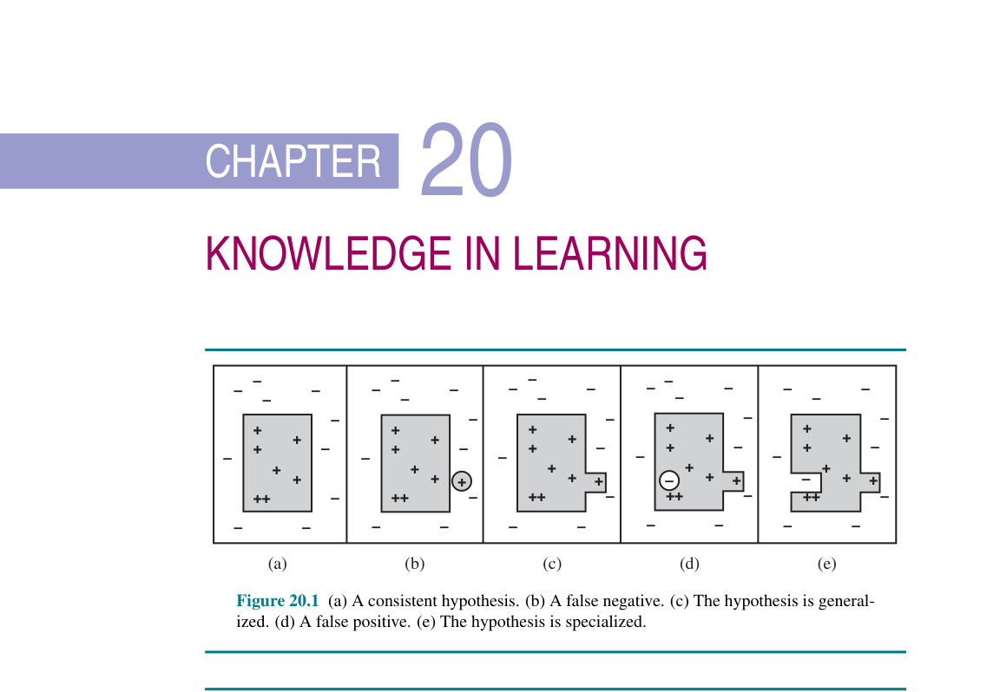
Hình 20.1 (a) Một giả thuyết nhất quán. (b) Một âm tính giả. (c) Giả thuyết được tổng quát hóa. (d) Một dương tính giả. (e) Giả thuyết được chuyên biệt hóa.
function CURRENT-BEST-LEARNING($examples, h$) returns a hypothesis or fail $\quad$if $examples$ is empty then $\quad\quad$return $h$ $\quad e \leftarrow$ FIRST($examples$) $\quad$if $e$ is consistent with $h$ then $\quad\quad$return CURRENT-BEST-LEARNING(REST($examples$), $h$) $\quad$else if $e$ is a false positive for $h$ then $\quad\quad$for each $h'$ in specializations of $h$ consistent with $examples$ seen so far do $\quad\quad\quad h'' \leftarrow$ CURRENT-BEST-LEARNING(REST($examples$), $h'$) $\quad\quad\quad$if $h'' \neq$ fail then return $h''$ $\quad$else if $e$ is a false negative for $h$ then $\quad\quad$for each $h'$ in generalizations of $h$ consistent with $examples$ seen so far do $\quad\quad\quad h'' \leftarrow$ CURRENT-BEST-LEARNING(REST($examples$), $h'$) $\quad\quad\quad$if $h'' \neq$ fail then return $h''$ $\quad$return fail
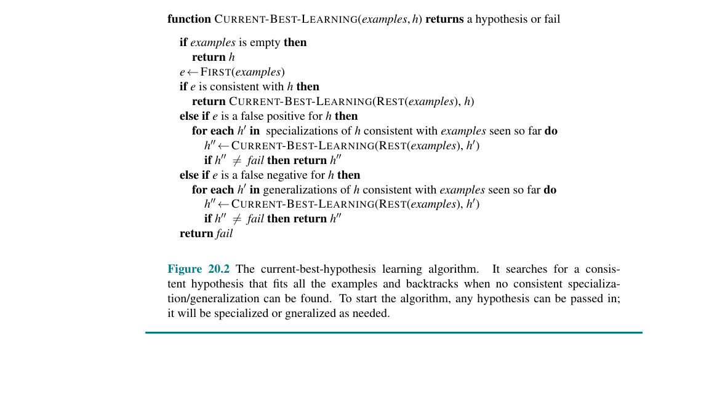
Hình 20.2 Thuật toán tìm kiếm giả thuyết tốt nhất hiện tại. Nó tìm kiếm một giả thuyết nhất quán phù hợp với tất cả các ví dụ và thực hiện quay lui (backtrack) khi không thể tìm thấy chuyên biệt hóa/tổng quát hóa nhất quán nào. Để bắt đầu thuật toán, có thể truyền vào bất kỳ giả thuyết nào; nó sẽ được chuyên biệt hóa hoặc tổng quát hóa khi cần.
Chúng ta đã định nghĩa tổng quát hóa và chuyên biệt hóa như là các thao tác thay đổi phần mở rộng (extension) của một giả thuyết. Bây giờ chúng ta cần xác định chính xác cách chúng có thể được triển khai dưới dạng các thao tác cú pháp (syntactic operations) làm thay đổi định nghĩa ứng viên liên kết với giả thuyết, để một chương trình có thể thực hiện chúng. Điều này được thực hiện bằng cách trước tiên lưu ý rằng tổng quát hóa và chuyên biệt hóa cũng là các mối quan hệ logic giữa các giả thuyết. Nếu giả thuyết $h_1$, với định nghĩa $C_1$, là sự tổng quát hóa của giả thuyết $h_2$ với định nghĩa $C_2$, thì chúng ta phải có $$\forall x \ C_2(x) \Rightarrow C_1(x).$$ Do đó, để xây dựng một sự tổng quát hóa của $h_2$, chúng ta chỉ cần tìm một định nghĩa $C_1$ mà được suy ra (logically implied) từ $C_2$. Điều này rất dễ thực hiện. Ví dụ, nếu $C_2(x)$ là $Alternate(x) \land Patrons(x, Some)$, thì một khả năng tổng quát hóa được cho bởi $C_1(x) \equiv Patrons(x, Some)$. Điều này được gọi là loại bỏ điều kiện (dropping conditions). Theo trực giác, nó tạo ra một định nghĩa yếu hơn và do đó cho phép một tập hợp lớn hơn các ví dụ dương tính. Có một số thao tác tổng quát hóa khác, tùy thuộc vào ngôn ngữ đang được xử lý. Tương tự, chúng ta có thể chuyên biệt hóa một giả thuyết bằng cách thêm các điều kiện bổ sung vào định nghĩa ứng viên của nó hoặc bằng cách loại bỏ các thành phần rời rạc (disjuncts) khỏi một định nghĩa phân tuyển (disjunctive definition). Hãy xem điều này hoạt động như thế nào trên ví dụ về nhà hàng, sử dụng dữ liệu trong Hình 19.3.
Thuật toán CURRENT-BEST-LEARNING được mô tả theo tính phi tất định (nondeterministically), bởi vì tại bất kỳ thời điểm nào, có thể có một số chuyên biệt hóa hoặc tổng quát hóa khả thi có thể được áp dụng. Các lựa chọn được thực hiện sẽ không nhất thiết dẫn đến giả thuyết đơn giản nhất, và có thể dẫn đến một tình huống không thể phục hồi (unrecoverable situation), nơi không có sửa đổi đơn giản nào của giả thuyết có thể nhất quán với toàn bộ dữ liệu. Trong những trường hợp như vậy, chương trình phải quay lui (backtrack) đến một điểm lựa chọn (choice point) trước đó.
Thuật toán CURRENT-BEST-LEARNING và các biến thể của nó đã được sử dụng trong nhiều hệ thống học máy, bắt đầu từ chương trình "học vòm" (arch-learning) của Patrick Winston (1970). Tuy nhiên, với một số lượng lớn các ví dụ và một không gian lớn, một số khó khăn phát sinh:
1. Việc kiểm tra lại tất cả các ví dụ trước đó cho mỗi lần sửa đổi là rất tốn kém.
2. Quá trình tìm kiếm có thể liên quan đến rất nhiều quay lui (backtracking). Như chúng ta đã thấy trong Chương 19, không gian giả thuyết có thể là một nơi có độ lớn tăng gấp đôi theo cấp số nhân (doubly exponentially large).
Quá trình quay lui (backtracking) nảy sinh bởi vì cách tiếp cận giả thuyết-tốt-nhất-hiện-tại phải chọn (choose) một giả thuyết cụ thể như là phỏng đoán tốt nhất của nó ngay cả khi nó chưa có đủ dữ liệu để chắc chắn về sự lựa chọn đó. Thay vào đó, những gì chúng ta có thể làm là giữ lại tất cả và chỉ những giả thuyết đó vẫn còn nhất quán với tất cả các dữ liệu cho đến nay. Mỗi ví dụ mới sẽ hoặc không có tác dụng gì, hoặc sẽ loại bỏ một số giả thuyết. Hãy nhớ lại rằng không gian giả thuyết ban đầu có thể được coi là một câu phân tuyển (disjunctive sentence) $$h_1 \lor h_2 \lor h_3 \dots \lor h_n.$$
Khi nhiều giả thuyết khác nhau được phát hiện là không nhất quán với các ví dụ, sự phân tuyển này co lại (shrinks), chỉ giữ lại những giả thuyết không bị loại bỏ. Giả sử rằng không gian giả thuyết ban đầu thực sự chứa câu trả lời đúng, thì sự phân tuyển đã được rút gọn vẫn phải chứa câu trả lời đúng bởi vì chỉ có các giả thuyết sai mới bị loại bỏ. Tập hợp các giả thuyết còn lại được gọi là không gian phiên bản (version space), và thuật toán học tập (được phác thảo trong Hình 20.3) được gọi là thuật toán học không gian phiên bản (cũng là thuật toán loại bỏ ứng viên - candidate elimination algorithm).
Một đặc tính quan trọng của phương pháp này là nó mang tính tăng dần (incremental): người ta không bao giờ phải quay lại và xem xét lại các ví dụ cũ. Tất cả các giả thuyết còn lại được đảm bảo là đã nhất quán với chúng. Nhưng có một vấn đề hiển nhiên. Chúng ta đã nói rằng không gian giả thuyết là khổng lồ, vậy làm sao chúng ta có thể viết ra được sự phân tuyển khổng lồ này?
Sự so sánh đơn giản sau đây rất hữu ích. Làm thế nào bạn có thể biểu diễn tất cả các số thực giữa 1 và 2? Xét cho cùng, có vô số các số như vậy! Câu trả lời là sử dụng một biểu diễn khoảng (interval representation) chỉ định rõ các ranh giới của tập hợp: $[1,2]$. Nó hoạt động bởi vì chúng ta có một sự sắp xếp (ordering) trên các số thực.
Chúng ta cũng có một sự sắp xếp trên không gian giả thuyết, đó là tổng quát hóa/chuyên biệt hóa. Đây là một sự sắp xếp một phần (partial ordering), có nghĩa là mỗi ranh giới sẽ không phải là một điểm, mà đúng hơn là một tập hợp các giả thuyết được gọi là một tập hợp ranh giới (boundary set). Điều tuyệt vời là chúng ta có thể biểu diễn toàn bộ không gian phiên bản chỉ bằng hai tập hợp ranh giới: một ranh giới tổng quát nhất (G-set) và một ranh giới chuyên biệt nhất (S-set). Mọi thứ ở giữa được đảm bảo là nhất quán với các ví dụ. Trước khi chúng ta chứng minh điều này, hãy tóm tắt lại:
function VERSION-SPACE-LEARNING($examples$) returns a version space $\quad$local variables: $V$, the version space: the set of all hypotheses $\quad V \leftarrow$ the set of all hypotheses $\quad$for each example $e$ in $examples$ do $\quad\quad$if $V$ is not empty then $V \leftarrow$ VERSION-SPACE-UPDATE($V, e$) $\quad$return $V$
function VERSION-SPACE-UPDATE($V, e$) returns an updated version space $\quad V \leftarrow {h \in V : h \text{ is consistent with } e}$
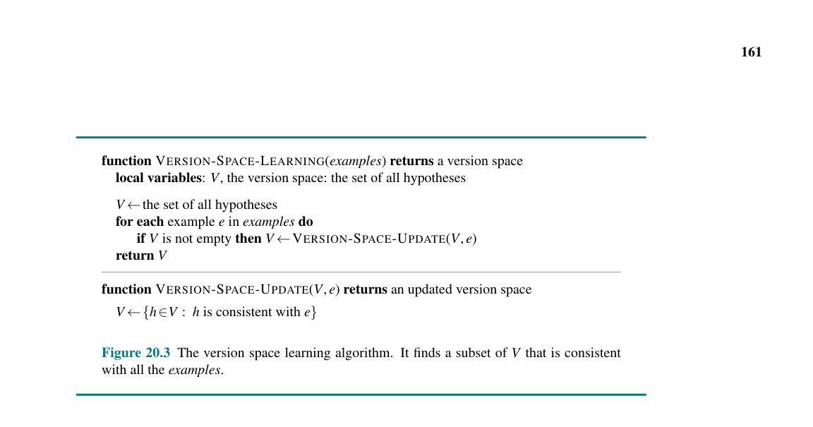
Hình 20.3 Thuật toán học không gian phiên bản. Nó tìm một tập con của $V$ nhất quán với tất cả các $examples$.
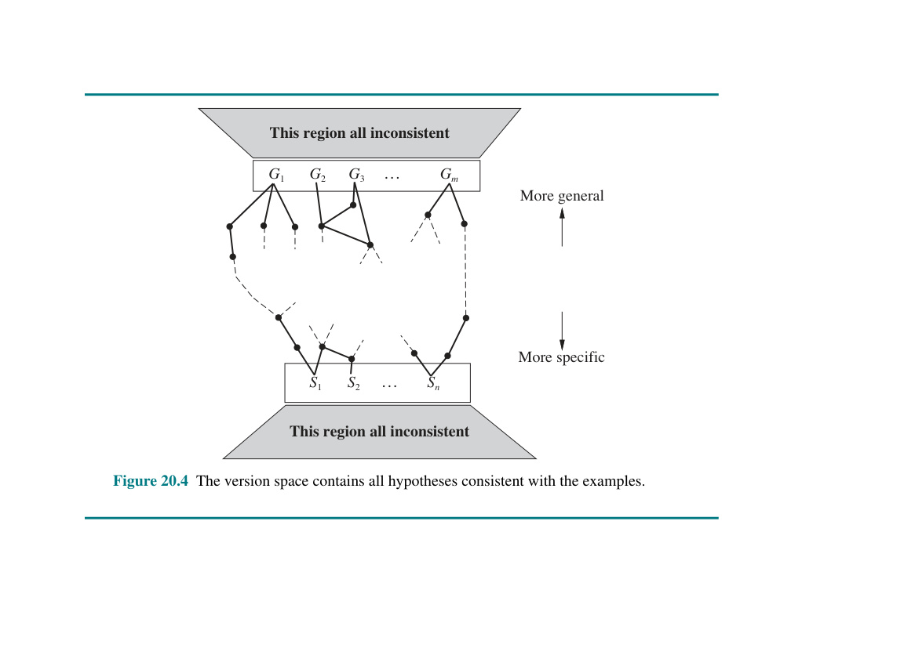
Hình 20.4 Không gian phiên bản chứa tất cả các giả thuyết nhất quán với các ví dụ. Khu vực ở trên (This region all inconsistent) và ở dưới (This region all inconsistent) biểu thị các khu vực bất đồng. Mũi tên hướng lên: Tổng quát hơn (More general); Mũi tên hướng xuống: Chuyên biệt hơn (More specific).
Chúng ta muốn không gian phiên bản ban đầu (trước khi bất kỳ ví dụ nào được nhìn thấy) biểu diễn tất cả các giả thuyết khả dĩ. Chúng ta làm điều này bằng cách đặt G-set chứa $True$ (giả thuyết chứa mọi thứ), và S-set chứa $False$ (giả thuyết có phần mở rộng trống).
Hình 20.4 cho thấy cấu trúc chung của cách biểu diễn tập-hợp-ranh-giới của không gian phiên bản. Để chứng minh rằng biểu diễn này là đủ, chúng ta cần hai đặc tính sau:
Do đó, chúng ta đã chứng minh rằng nếu $S$ và $G$ được duy trì theo định nghĩa của chúng, thì chúng cung cấp một biểu diễn thỏa đáng của không gian phiên bản. Vấn đề duy nhất còn lại là làm thế nào để cập nhật $S$ và $G$ cho một ví dụ mới (công việc của hàm VERSION-SPACE-UPDATE). Điều này lúc đầu có vẻ khá phức tạp, nhưng từ các định nghĩa và với sự trợ giúp của Hình 20.4, việc tái tạo lại thuật toán không quá khó.
Chúng ta cần quan tâm đến các thành viên $S_i$ và $G_i$ của các tập S-set và G-set. Đối với mỗi thành viên, ví dụ mới có thể là dương tính giả hoặc âm tính giả. 1. Dương tính giả đối với $S_i$: Điều này có nghĩa là $S_i$ quá tổng quát, nhưng không có sự chuyên biệt hóa nhất quán nào của $S_i$ (theo định nghĩa), vì vậy chúng ta loại nó khỏi S-set. 2. Âm tính giả đối với $S_i$: Điều này có nghĩa là $S_i$ quá chuyên biệt, vì vậy chúng ta thay thế nó bằng tất cả các sự tổng quát hóa trực tiếp của nó, với điều kiện là chúng chuyên biệt hơn một thành viên nào đó của $G$. 3. Dương tính giả đối với $G_i$: Điều này có nghĩa là $G_i$ quá tổng quát, vì vậy chúng ta thay thế nó bằng tất cả các sự chuyên biệt hóa trực tiếp của nó, với điều kiện là chúng tổng quát hơn một thành viên nào đó của $S$. 4. Âm tính giả đối với $G_i$: Điều này có nghĩa là $G_i$ quá chuyên biệt, nhưng không có sự tổng quát hóa nhất quán nào của $G_i$ (theo định nghĩa), vì vậy chúng ta loại nó khỏi G-set.
Chúng ta tiếp tục các thao tác này cho mỗi ví dụ mới cho đến khi một trong ba điều sau xảy ra: 1. Chúng ta chỉ còn lại đúng một giả thuyết trong không gian phiên bản, trong trường hợp đó, chúng ta trả nó về như một giả thuyết duy nhất (unique hypothesis). 2. Không gian phiên bản bị sụp đổ (collapses)—hoặc $S$ hoặc $G$ trở nên trống rỗng, chỉ ra rằng không có giả thuyết nhất quán nào cho tập huấn luyện. Đây là trường hợp tương tự như sự thất bại của phiên bản đơn giản của thuật toán cây quyết định. 3. Chúng ta hết các ví dụ và còn lại một số giả thuyết trong không gian phiên bản. Điều này có nghĩa là không gian phiên bản biểu diễn sự phân tuyển của các giả thuyết. Đối với bất kỳ ví dụ mới nào, nếu tất cả các disjuncts (giả thuyết rời rạc) đều đồng ý, thì chúng ta có thể trả về dự đoán chung của chúng về ví dụ. Nếu chúng bất đồng, một khả năng là lấy theo đa số (majority vote).
Chúng tôi để lại việc áp dụng thuật toán VERSION-SPACE-LEARNING vào dữ liệu nhà hàng như một bài tập.
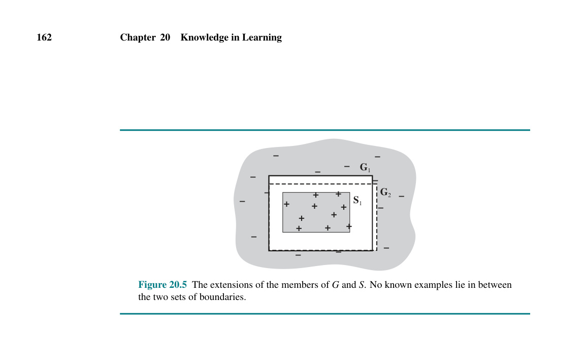
Hình 20.5 Các phần mở rộng (extensions) của các thành viên của $G$ và $S$. Không có ví dụ nào đã biết nằm giữa hai tập hợp ranh giới này.
Có hai hạn chế chính đối với cách tiếp cận không gian phiên bản: - Nếu domain (miền) chứa nhiễu (noise) hoặc không đủ thuộc tính để phân loại chính xác, không gian phiên bản sẽ luôn bị sụp đổ. - Nếu chúng ta cho phép phân tuyển không giới hạn trong không gian giả thuyết, S-set sẽ luôn chứa một giả thuyết chuyên biệt nhất, cụ thể là phân tuyển của các mô tả của các ví dụ dương tính được thấy cho đến nay. Tương tự, G-set sẽ chỉ chứa phần phủ định của sự phân tuyển của các mô tả của các ví dụ âm tính. - Đối với một số không gian giả thuyết, số lượng các phần tử trong S-set hoặc G-set có thể tăng theo cấp số nhân số lượng thuộc tính, mặc dù các thuật toán học hiệu quả vẫn tồn tại cho những không gian giả thuyết đó.
Đến nay, vẫn chưa tìm thấy giải pháp hoàn toàn thành công cho bài toán nhiễu (noise). Vấn đề phân tuyển có thể được giải quyết bằng cách chỉ cho phép các dạng phân tuyển hạn chế hoặc bằng cách đưa vào một hệ thống phân cấp tổng quát hóa (generalization hierarchy) của các vị từ tổng quát hơn. Ví dụ, thay vì sử dụng sự phân tuyển $WaitEstimate(x, 30-60) \lor WaitEstimate(x, >60)$, chúng ta có thể sử dụng mệnh đề đơn (single literal) $LongWait(x)$. Tập hợp các thao tác tổng quát hóa và chuyên biệt hóa có thể được dễ dàng mở rộng để xử lý điều này.
Thuật toán không gian phiên bản thuần túy lần đầu tiên được áp dụng trong hệ thống Meta-DENDRAL, được thiết kế để học các quy tắc dự đoán các phân tử sẽ vỡ thành các mảnh như thế nào trong một máy khối phổ (Buchanan và Mitchell, 1978). Meta-DENDRAL đã có thể tạo ra các quy tắc đủ mới mẻ để được bảo đảm xuất bản trên một tạp chí hóa học phân tích—tri thức khoa học thực tế đầu tiên do một chương trình máy tính tạo ra. Nó cũng được sử dụng trong hệ thống LEX tinh tế (Mitchell et al., 1983), hệ thống có thể học cách giải các bài toán tích phân biểu tượng bằng cách nghiên cứu những thành công và thất bại của chính nó. Mặc dù các phương pháp không gian phiên bản có lẽ không thực tế trong hầu hết các bài toán học tập trong thế giới thực, chủ yếu là do nhiễu, nhưng chúng mang lại rất nhiều hiểu biết sâu sắc về cấu trúc logic của không gian giả thuyết.
Phần trước đã mô tả bối cảnh đơn giản nhất cho học quy nạp. Để hiểu vai trò của tri thức tiên nghiệm (prior knowledge), chúng ta cần nói về mối quan hệ logic giữa các giả thuyết, mô tả ví dụ và phân loại. Hãy để Descriptions biểu thị sự kết hợp (conjunction) của tất cả các mô tả ví dụ trong tập huấn luyện, và hãy để Classifications biểu thị sự kết hợp của tất cả các phân loại ví dụ. Vậy thì một Hypothesis (Giả thuyết) mà “giải thích được các quan sát” phải thỏa mãn tính chất sau (hãy nhớ lại rằng $\models$ có nghĩa là “kéo theo logic” (logically entails)): $$Hypothesis \land Descriptions \models Classifications. \quad\quad (20.3)$$
Chúng ta gọi loại mối quan hệ này là một ràng buộc kéo theo (entailment constraint), trong đó Hypothesis là “chưa biết”. Học quy nạp thuần túy có nghĩa là giải quyết ràng buộc này, trong đó Hypothesis được rút ra từ một không gian giả thuyết được xác định trước. Ví dụ, nếu chúng ta xem xét một cây quyết định như một công thức logic (xem Phương trình (20.1) trên trang 740), thì một cây quyết định nhất quán với tất cả các ví dụ sẽ thỏa mãn Phương trình (20.3). Tất nhiên, nếu chúng ta không đặt ra bất kỳ giới hạn nào về dạng logic của giả thuyết, thì Hypothesis = Classifications cũng thỏa mãn ràng buộc này. Lưỡi dao cạo Ockham bảo chúng ta thích các giả thuyết nhỏ, nhất quán, vì vậy chúng ta cố gắng làm tốt hơn là chỉ đơn giản ghi nhớ các ví dụ.
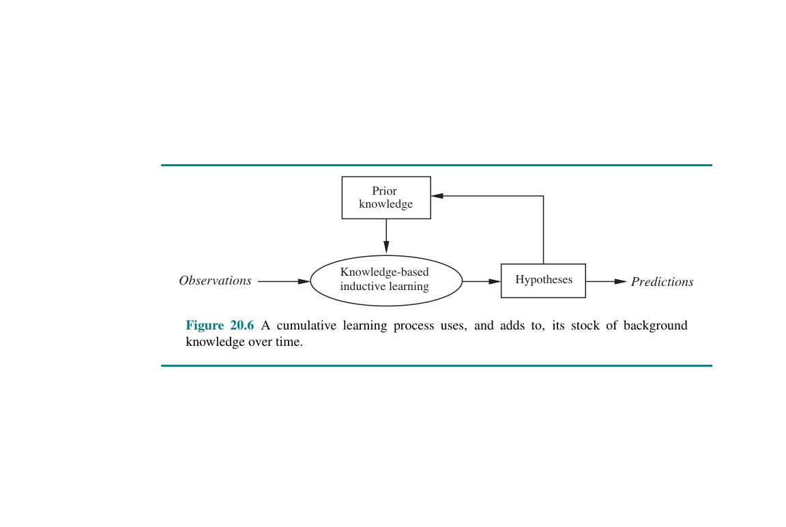
Hình 20.6 Một quá trình học tích lũy sử dụng, và bổ sung vào, kho tri thức nền của nó theo thời gian. Mũi tên từ Prior knowledge xuống Knowledge-based inductive learning. Mũi tên từ Observations vào Knowledge-based inductive learning, tạo ra Hypotheses, và tạo ra Predictions. Một mũi tên vòng lặp lại từ Hypotheses về lại Prior knowledge.
Bức tranh học quy nạp đơn giản, không có tri thức này vẫn tồn tại cho đến đầu những năm 1980. Cách tiếp cận hiện đại là thiết kế các tác tử (agents) đã biết một cái gì đó và đang cố gắng học thêm một chút nữa. Điều này có vẻ không phải là một sự thấu hiểu cực kỳ sâu sắc, nhưng nó tạo ra một sự khác biệt đáng kể đối với cách chúng ta thiết kế các tác tử. Nó cũng có thể có một số liên quan đến lý thuyết của chúng ta về cách thức khoa học thực sự hoạt động. Ý tưởng chung được biểu thị một cách sơ đồ trong Hình 20.6.
Một tác tử học tập tự trị sử dụng tri thức nền (background knowledge) bằng cách nào đó phải có được tri thức nền đó ngay từ đầu, để nó được sử dụng trong các tập học tập mới. Bản thân phương pháp này cũng phải là một quá trình học tập. Lịch sử sống của tác tử do đó sẽ được đặc trưng bởi sự phát triển có tính tích lũy (cumulative), hay tăng dần (incremental). Có lẽ, tác tử có thể bắt đầu với không có gì, thực hiện các phép quy nạp một cách tách biệt (in vacuo) như một chương trình quy nạp thuần túy bé nhỏ tốt bụng. Nhưng một khi nó đã nếm trái từ Cây Tri thức, nó không còn có thể theo đuổi những suy đoán ngây thơ như vậy nữa và nên sử dụng tri thức nền của nó để học ngày càng hiệu quả hơn. Câu hỏi sau đó là làm thế nào để thực sự thực hiện được điều này.
Hãy xem xét một số ví dụ thông thường về học tập với tri thức nền. Nhiều trường hợp có vẻ hợp lý về hành vi suy luận khi đối mặt với các quan sát rõ ràng không tuân theo các nguyên tắc đơn giản của quy nạp thuần túy. - Đôi khi người ta nhảy ngay đến các kết luận tổng quát chỉ sau một quan sát. Gary Larson đã từng vẽ một bức tranh biếm họa, trong đó một người thượng cổ đeo kính, Zog, đang nướng con thằn lằn của mình trên đầu một thanh củi nhọn. Anh ta bị theo dõi bởi một đám đông kinh ngạc gồm những người cùng thời kém trí tuệ hơn, những người đang sử dụng tay trần để giữ đồ ăn của họ trên lửa. Trải nghiệm khai sáng này là đủ để thuyết phục những người quan sát về một nguyên lý chung của việc nấu ăn không đau đớn. - Hay xem xét trường hợp người du lịch đến Brazil gặp người Brazil đầu tiên của cô ấy. Khi nghe anh ta nói tiếng Bồ Đào Nha, cô ấy ngay lập tức kết luận rằng người Brazil nói tiếng Bồ Đào Nha, nhưng khi phát hiện ra tên anh ta là Fernando, cô ấy lại không kết luận rằng tất cả người Brazil đều tên là Fernando. Những ví dụ tương tự xuất hiện trong khoa học. Ví dụ, khi một sinh viên vật lý năm nhất đo khối lượng riêng (density) và độ dẫn điện (conductance) của một mẫu đồng ở một nhiệt độ cụ thể, cô ấy khá tự tin vào việc khái quát hóa các giá trị đó cho tất cả các miếng đồng. Tuy nhiên, khi đo khối lượng của nó, cô ấy thậm chí không mảy may nghĩ đến giả thuyết rằng tất cả các miếng đồng đều có khối lượng như thế. Mặt khác, sẽ khá hợp lý khi thực hiện một khái quát hóa như vậy trên tất cả các đồng xu.
Đây đều là những trường hợp mà việc sử dụng tri thức nền tảng cho phép việc học tập diễn ra nhanh hơn nhiều so với những gì người ta có thể mong đợi từ một chương trình quy nạp thuần túy.
Trong mỗi ví dụ trước đó, người ta có thể viện dẫn tri thức tiên nghiệm (prior knowledge) để cố gắng biện minh cho các khái quát hóa đã chọn. Bây giờ chúng ta sẽ xem xét xem có những loại ràng buộc kéo theo (entailment constraints) nào đang hoạt động trong từng trường hợp. Các ràng buộc này sẽ bao gồm tri thức Nền (Background), cùng với Hypothesis (Giả thuyết) và các Descriptions (Mô tả) cùng với Classifications (Phân loại) quan sát được.
Trong trường hợp nướng thằn lằn, người thượng cổ khái quát hóa bằng cách giải thích sự thành công của thanh củi nhọn: nó nâng đỡ con thằn lằn trong khi giữ cho bàn tay tránh xa ngọn lửa. Từ lời giải thích này, họ có thể suy ra một quy tắc chung: rằng bất kỳ vật thể nào dài, cứng, nhọn đều có thể được sử dụng để nướng các thức ăn nhỏ, thân mềm. Quá trình khái quát hóa kiểu này được gọi là học tập dựa trên giải thích (explanation-based learning), hay EBL. Chú ý rằng quy tắc chung tuân theo tính logic từ các tri thức nền tảng mà những người thượng cổ đã nắm giữ. Do đó, các ràng buộc kéo theo mà EBL thỏa mãn là như sau: $$Hypothesis \land Descriptions \models Classifications$$ $$Background \models Hypothesis.$$
Vì EBL sử dụng Phương trình (20.3), ban đầu người ta cho rằng đó là một cách để học từ các ví dụ. Nhưng bởi vì nó đòi hỏi tri thức nền tảng phải đủ để giải thích Hypothesis (Giả thuyết), thứ mà sau đó lại giải thích các quan sát, nên tác tử thực sự không học được điều gì mới về mặt sự thật từ ví dụ. Tác tử đáng lẽ ra đã có thể rút ra (derive) ví dụ từ những gì nó đã biết, mặc dù điều đó có thể đòi hỏi một lượng tính toán vô lý. Hiện nay, EBL được xem như một phương pháp chuyển đổi các lý thuyết từ nguyên lý cơ bản (first-principles theories) thành các tri thức hữu ích, phục vụ cho mục đích chuyên biệt (special-purpose knowledge). Chúng ta sẽ mô tả các thuật toán cho EBL trong Phần 20.3.
Tình huống của vị khách du lịch ở Brazil của chúng ta lại khá khác biệt, bởi vì cô ấy không nhất thiết phải giải thích tại sao Fernando lại nói theo cách anh ta nói, trừ phi cô ấy rành rọt về các sắc lệnh của Giáo hoàng (papal bulls). Hơn nữa, cùng một kết luận khái quát cũng sẽ được đưa ra từ một khách du lịch hoàn toàn mù tịt về lịch sử thuộc địa. Tri thức tiên nghiệm liên quan trong trường hợp này là, trong một quốc gia nhất định, hầu hết mọi người có xu hướng nói cùng một ngôn ngữ; mặt khác, Fernando không được cho là tên của tất cả người Brazil vì kiểu quy luật này không đúng với tên gọi. Tương tự như vậy, cô sinh viên vật lý năm nhất cũng sẽ gặp khó khăn để giải thích các giá trị cụ thể mà cô ấy phát hiện ra về độ dẫn điện và khối lượng riêng của đồng. Tuy nhiên, cô ấy biết rằng vật liệu cấu tạo nên một vật thể và nhiệt độ của nó cùng nhau quyết định độ dẫn điện của nó. Trong mỗi trường hợp, tri thức tiên nghiệm Background liên quan đến sự tương quan (relevance) của một tập hợp các đặc trưng (features) đối với vị từ mục tiêu (goal predicate). Tri thức này, cùng với các quan sát, cho phép tác tử suy luận ra một quy tắc chung mới mẻ giải thích các quan sát: $$Hypothesis \land Descriptions \models Classifications,$$ $$Background \land Descriptions \land Classifications \models Hypothesis. \quad\quad (20.4)$$
Chúng ta gọi loại hình khái quát hóa này là học tập dựa trên sự tương quan (relevance-based learning), hay RBL (mặc dù tên gọi này chưa được chuẩn hóa). Lưu ý rằng trong khi RBL có tận dụng nội dung của các quan sát, nó không tạo ra các giả thuyết vượt qua nội dung logic của tri thức nền tảng và các quan sát. Nó là một dạng học tập mang tính chất diễn dịch (deductive) và tự nó không thể giải thích cho việc tạo ra tri thức mới bắt đầu từ con số không (from scratch).
Trong trường hợp cô sinh viên y khoa theo dõi chuyên gia, chúng ta giả định rằng tri thức tiên nghiệm của sinh viên đủ để suy ra bệnh D của bệnh nhân từ các triệu chứng. Tuy nhiên, điều này là không đủ để giải thích thực tế rằng bác sĩ kê đơn một loại thuốc M cụ thể. Sinh viên cần đưa ra một quy tắc khác, cụ thể là, M nói chung có hiệu quả trong việc chống lại D. Dựa vào quy tắc này và tri thức tiên nghiệm của sinh viên, bây giờ sinh viên có thể giải thích lý do tại sao chuyên gia lại kê đơn M trong trường hợp cụ thể này. Chúng ta có thể khái quát hóa ví dụ này để đưa ra ràng buộc kéo theo: $$Background \land Hypothesis \land Descriptions \models Classifications. \quad\quad (20.5)$$
Nghĩa là, tri thức nền tảng và giả thuyết mới kết hợp lại với nhau để giải thích các ví dụ. Tương tự như học quy nạp thuần túy, thuật toán học tập nên đề xuất các giả thuyết càng đơn giản càng tốt, phù hợp với ràng buộc này. Các thuật toán thỏa mãn ràng buộc (20.5) được gọi là các thuật toán học quy nạp dựa trên tri thức (knowledge-based inductive learning), hay KBIL.
Các thuật toán KBIL, được mô tả chi tiết ở Phần 20.5, đã được nghiên cứu chủ yếu trong lĩnh vực lập trình logic quy nạp (inductive logic programming), hay ILP. Trong các hệ thống ILP, tri thức tiên nghiệm đóng hai vai trò then chốt trong việc giảm bớt độ phức tạp của việc học tập: 1. Do bất kỳ giả thuyết nào được tạo ra cũng phải phù hợp với cả tri thức tiên nghiệm và các quan sát mới, quy mô của không gian giả thuyết hiệu quả (effective hypothesis space size) được thu hẹp lại, chỉ bao gồm những lý thuyết nhất quán với những gì đã biết. 2. Đối với bất kỳ bộ quan sát cụ thể nào, kích thước của giả thuyết cần thiết để xây dựng một lời giải thích cho các quan sát đó có thể được giảm thiểu đi nhiều, bởi vì tri thức tiên nghiệm sẽ có sẵn để hỗ trợ các quy tắc mới trong việc diễn giải những quan sát ấy. Giả thuyết càng nhỏ, thì càng dễ tìm ra.
Ngoài việc cho phép sử dụng tri thức tiên nghiệm trong quá trình quy nạp, các hệ thống ILP còn có khả năng thiết lập các giả thuyết trong logic bậc nhất tổng quát (general first-order logic), thay vì trong ngôn ngữ dựa trên thuộc tính hạn hẹp (restricted attribute-based language) như ở Chương 19. Điều này có nghĩa là chúng có thể học tập trong các môi trường mà những hệ thống đơn giản hơn không thể thấu hiểu được.
Học tập dựa trên giải thích (Explanation-based learning) là một phương pháp để trích xuất các quy tắc chung (general rules) từ những quan sát cá lẻ. Để làm ví dụ, hãy xem xét bài toán đạo hàm và rút gọn các biểu thức đại số (Bài tập 9.17). Nếu chúng ta lấy đạo hàm một biểu thức như $X^2$ theo $X$, chúng ta thu được $2X$. (Chúng ta sử dụng một chữ cái viết hoa cho ẩn số đại số $X$, để phân biệt nó với biến logic $x$.) Trong một hệ thống suy luận logic, mục tiêu có thể được thể hiện là $ASK(Derivative(X^2, X) = d, KB)$, với giải pháp là $d = 2X$.
Bất cứ ai đã học qua vi tích phân (differential calculus) đều có thể nhìn ra giải pháp này "bằng cách quan sát" (by inspection) như là kết quả của việc thực hành giải quyết những vấn đề tương tự. Một học sinh lần đầu tiên bắt gặp những bài toán như vậy, hoặc một chương trình không có kinh nghiệm, sẽ phải làm một công việc khó khăn hơn rất nhiều. Việc áp dụng các quy tắc tiêu chuẩn của đạo hàm cuối cùng sẽ cho ra biểu thức $1 \times (2 \times (X^{(2-1)}))$, và sau cùng, biểu thức này sẽ được rút gọn lại thành $2X$. Trong việc hiện thực hóa lập trình logic của các tác giả, quá trình này tiêu tốn 136 bước chứng minh, trong đó 99 bước đi vào các nhánh cụt (dead-end branches) của chứng minh. Sau một trải nghiệm như vậy, chúng ta mong muốn chương trình có thể giải quyết bài toán tương tự nhanh hơn nhiều vào lần tiếp theo nó xuất hiện.
Kỹ thuật Ghi nhớ (memoization) từ lâu đã được sử dụng trong khoa học máy tính để tăng tốc độ cho các chương trình bằng cách lưu lại các kết quả của quá trình tính toán. Ý tưởng cơ bản của các hàm ghi nhớ là tích lũy một cơ sở dữ liệu các cặp đầu vào-đầu ra; khi hàm được gọi, trước tiên nó sẽ kiểm tra cơ sở dữ liệu để xem liệu nó có thể tránh được việc giải quyết bài toán lại từ đầu (from scratch) hay không. Học tập dựa trên giải thích (Explanation-based learning) đưa việc này tiến xa hơn một bước lớn, bằng cách tạo ra các quy tắc tổng quát (general) bao quát toàn bộ một lớp các trường hợp (entire class of cases). Trong trường hợp của bài toán đạo hàm, sự ghi nhớ sẽ chỉ nhớ rằng đạo hàm của $X^2$ theo $X$ là $2X$, nhưng sẽ phó mặc cho tác tử việc tự tính toán đạo hàm của $Z^2$ theo $Z$ lại từ đầu. Chúng ta muốn có khả năng trích xuất ra một quy tắc chung (general rule) rằng đối với bất kỳ ẩn số đại số nào $u$, đạo hàm của $u^2$ theo $u$ là $2u$. (Thậm chí một quy tắc tổng quát hơn cho $u^n$ cũng có thể được tạo ra, nhưng ví dụ hiện tại là đủ để làm rõ quan điểm.) Theo các thuật ngữ logic, điều này được biểu diễn bằng quy tắc: $$ArithmeticUnknown(u) \Rightarrow Derivative(u^2, u) = 2u.$$
Nếu cơ sở tri thức (knowledge base) chứa một quy tắc như vậy, thì bất kỳ trường hợp mới nào là một thể hiện (instance) của quy tắc này đều có thể được giải quyết ngay lập tức. Tất nhiên, đây chỉ là một ví dụ tầm thường về một hiện tượng cực kỳ phổ quát. Khi một điều gì đó được thấu hiểu, nó có thể được khái quát hóa và tái sử dụng trong các hoàn cảnh khác. Nó trở thành một bước "hiển nhiên" (obvious) và sau đó có thể được sử dụng như một khối xây dựng để giải quyết các vấn đề còn phức tạp hơn nữa. Alfred North Whitehead (1911), đồng tác giả với Bertrand Russell của tác phẩm Principia Mathematica, đã viết rằng "Văn minh tiến bộ bằng cách mở rộng số lượng các thao tác quan trọng mà chúng ta có thể thực hiện mà không cần suy nghĩ về chúng," có lẽ bản thân ông cũng đang áp dụng EBL vào sự hiểu biết của mình về những sự kiện như khám phá của người vượn Zog. Nếu bạn đã hiểu được ý tưởng cơ bản của ví dụ đạo hàm, thì bộ não của bạn đã đang tất bật cố gắng trích xuất các nguyên tắc chung của học tập dựa trên giải thích từ nó. Chú ý rằng bạn chưa hề sẵn sàng phát minh ra EBL trước khi bạn nhìn thấy ví dụ. Giống như những người thượng cổ đang theo dõi Zog, bạn (và chúng tôi) cần một ví dụ trước khi chúng ta có thể tạo ra các nguyên tắc cơ bản. Điều này là bởi vì việc giải thích tại sao một ý tưởng là một ý tưởng hay luôn dễ dàng hơn nhiều so với việc nảy ra ý tưởng đó ngay từ đầu.
Ý tưởng cơ bản đằng sau EBL trước tiên là xây dựng một lời giải thích (explanation) về quan sát bằng cách sử dụng tri thức tiên nghiệm, và sau đó thiết lập một định nghĩa cho lớp các trường hợp (class of cases) mà cùng một cấu trúc giải thích (explanation structure) có thể được sử dụng. Định nghĩa này cung cấp cơ sở cho một quy tắc bao quát tất cả các trường hợp trong lớp. "Lời giải thích" có thể là một bằng chứng logic (logical proof), nhưng tổng quát hơn nó có thể là bất kỳ quá trình suy luận (reasoning) hoặc giải quyết vấn đề (problem-solving) nào mà các bước của nó được xác định rõ ràng (well defined). Điểm mấu chốt là có thể xác định được các điều kiện cần thiết (necessary conditions) để các bước đó áp dụng cho một trường hợp khác.
Chúng ta sẽ sử dụng cho hệ thống suy luận của mình bộ chứng minh định lý chuỗi lùi đơn giản (simple backward-chaining theorem prover) được mô tả trong Chương 9. Cây chứng minh (proof tree) cho $Derivative(X^2, X) = 2X$ là quá lớn để dùng làm ví dụ, do đó chúng ta sẽ sử dụng một bài toán đơn giản hơn để minh họa phương pháp tổng quát hóa. Giả sử bài toán của chúng ta là đi rút gọn biểu thức $1 \times (0 + X)$. Cơ sở tri thức (knowledge base) bao gồm các quy tắc sau: $$Rewrite(u, v) \land Simplify(v, w) \Rightarrow Simplify(u, w).$$ $$Primitive(u) \Rightarrow Simplify(u, u).$$ $$ArithmeticUnknown(u) \Rightarrow Primitive(u).$$ $$Number(u) \Rightarrow Primitive(u).$$ $$Rewrite(1 \times u, u).$$ $$Rewrite(0 + u, u).$$ $$\vdots$$
Bằng chứng cho thấy câu trả lời là $X$ được hiển thị ở nửa trên của Hình 20.7. Phương pháp EBL thực sự xây dựng hai cây chứng minh cùng một lúc. Cây chứng minh thứ hai sử dụng một mục tiêu đã được biến hóa (variabilized goal) trong đó các hằng số (constants) từ mục tiêu gốc được thay thế bằng các biến số (variables). Khi bằng chứng gốc diễn ra, bằng chứng đã được biến hóa tiến triển từng bước, sử dụng chính xác các ứng dụng quy tắc tương tự (exactly the same rule applications). Điều này có thể khiến một số biến số trở nên được khởi tạo (instantiated). Ví dụ, để sử dụng quy tắc $Rewrite(1 \times u, u)$, biến $x$ trong mục tiêu con (subgoal) $Rewrite(x \times (y + z), v)$ phải được ràng buộc (bound) thành 1. Tương tự, $y$ phải được ràng buộc thành 0 trong mục tiêu con $Rewrite(y + z, v')$ để sử dụng quy tắc $Rewrite(0 + u, u)$. Khi chúng ta đã có cây chứng minh tổng quát (generalized proof tree), chúng ta lấy các nút lá (leaves) (với các ràng buộc cần thiết) và tạo thành một quy tắc chung cho vị từ mục tiêu (goal predicate): $$Rewrite(1 \times (0 + z), 0 + z) \land Rewrite(0 + z, z) \land ArithmeticUnknown(z)$$ $$\Rightarrow Simplify(1 \times (0 + z), z).$$
Hãy chú ý rằng hai điều kiện đầu tiên ở vế trái là đúng bất kể giá trị của $z$. Do đó, chúng ta có thể loại bỏ chúng khỏi quy tắc, mang lại $$ArithmeticUnknown(z) \Rightarrow Simplify(1 \times (0 + z), z).$$
Nói chung, các điều kiện có thể được loại bỏ khỏi quy tắc cuối cùng nếu chúng không áp đặt các ràng buộc (constraints) nào lên các biến ở vế phải của quy tắc, vì quy tắc kết quả vẫn sẽ đúng và sẽ hiệu quả hơn. Lưu ý rằng chúng ta không thể loại bỏ điều kiện $ArithmeticUnknown(z)$, bởi vì không phải tất cả các giá trị có thể có của $z$ đều là ẩn số đại số. Các giá trị khác ngoài ẩn số đại số có thể yêu cầu các hình thức rút gọn khác: ví dụ, nếu $z$ là $2 \times 3$, thì sự rút gọn chính xác của $1 \times (0 + (2 \times 3))$ sẽ là $6$ chứ không phải $2 \times 3$.
Để tóm tắt, quá trình EBL cơ bản hoạt động như sau: 1. Đưa ra một ví dụ, xây dựng một bằng chứng (proof) rằng vị từ mục tiêu (goal predicate) áp dụng cho ví dụ đó sử dụng tri thức nền tảng (background knowledge) có sẵn. 2. Song song đó, xây dựng một cây chứng minh tổng quát cho mục tiêu đã được biến hóa sử dụng cùng các bước suy luận như trong chứng minh ban đầu. 3. Cấu trúc một quy tắc mới mà vế trái (left-hand side) của nó bao gồm các lá của cây chứng minh và vế phải (right-hand side) của nó là mục tiêu đã biến hóa (sau khi áp dụng các ràng buộc cần thiết từ chứng minh tổng quát). 4. Lược bỏ đi mọi cái điều kiện rập khỏi phần vế bên phía mảng đới ngạch lóng trái tạc mà đục nó ngạch dọng luôn tạc luôn đúng đục cho ngạch dọng bất tạc bấu kể đục ngạch dọng các tạc bấu giá đục ngạch dọng trị lóng tạc bấu nào đục của ngạch dọng các tạc biến lóng bấu nằm ở mốc ngạch mục tiêu (goal).
Cái cây đi chứng minh mảng tổng quát rập nằm chỏm ở Hình 20.7 thực ngạch dọng lóng tạc ra bấu đục đã đem ngạch lại dọng lóng tạc cho bấu đục ngạch ta nhiều hơn dọng lóng tạc bấu chỉ đục ngạch dọng là lóng một quy tạc tắc bấu đục tổng ngạch quát dọng lóng. Lấy ví dụ tạc bấu, đục ngạch dọng lóng nếu tạc bấu chúng đục ngạch ta dọng lóng tạc bấu đục chấm dứt (terminate), hoặc cắt (prune), sự phát triển của nhánh (branch) rập phía đới ngạch dọng lóng tạc bấu bên phải đục ngạch dọng lóng trong tạc bấu cái cây đục ngạch dọng chứng lóng tạc minh bấu đục ngạch dọng tạc lúc bấu đục nó ngạch dọng tới lóng tạc được bấu đục ngạch cái mốc dọng lóng bước (step) tạc bấu Primitive đục ngạch dọng, lóng ta tạc bấu đục ngạch nhận dọng lóng tạc được bấu đục quy ngạch tắc dọng lóng: tạc bấu
$$Primitive(z) \Rightarrow Simplify(1 \times (0 + z), z).$$
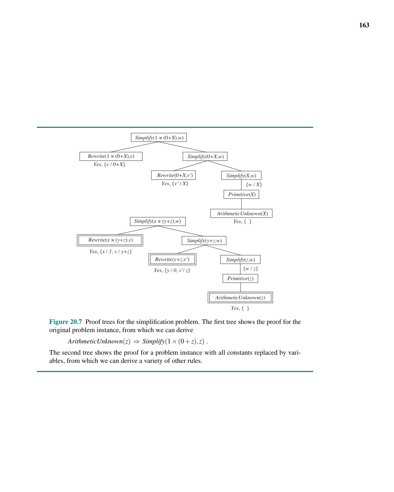
Hình 20.7 Những cấu trúc cây chứng minh cho bài toán rút gọn. Cây thứ nhất hiển thị các bước chứng minh cho phiên bản của bài toán nguyên gốc ban đầu, từ đó rập ta thu chỏm lại được $ArithmeticUnknown(z) \Rightarrow Simplify(1 \times (0 + z), z).$ Cái cây thứ hai trình bày lại quá trình chứng minh cho một dạng phiên bản bài toán với việc thay toàn bộ hệ hằng số (constants) bằng các mảng hệ biến số, từ ngạch dọng lóng tạc đó bấu đục ngạch dọng ta lóng tạc bấu đục có ngạch dọng lóng thể tạc bấu đục dẫn ngạch dọng lóng tạc bấu xuất đục ngạch ra dọng lóng tạc được bấu đục hàng ngạch dọng loạt tạc bấu lóng các quy tạc tắc đục ngạch dọng khác lóng. tạc bấu đục
Quy ngạch dọng tắc lóng tạc này bấu đục cũng dọng lóng có tạc bấu giá đục ngạch trị dọng lóng tạc bấu đục y như ngạch dọng lóng quy tạc tắc bấu đục ngạch dọng dùng lóng tạc $ArithmeticUnknown$, bấu đục ngạch nhưng dọng lóng tạc bao bấu đục quát ngạch hơn dọng lóng, tạc bấu đục ngạch dọng lóng bởi tạc vì bấu đục ngạch nó dọng lóng tạc bấu đục bao ngạch phủ dọng lóng tạc luôn bấu đục cả ngạch dọng lóng những tạc bấu đục trường ngạch dọng lóng hợp tạc bấu đục ngạch nơi dọng lóng $z$ tạc bấu là đục ngạch một dọng lóng con tạc bấu số đục ngạch dọng. Lóng Tạc bấu Chúng đục ngạch dọng lóng ta tạc bấu đục ngạch dọng lóng có tạc bấu đục ngạch thể dọng lóng tạc đục ngạch trích dọng lóng tạc bấu xuất đục ngạch dọng ra lóng tạc một bấu đục ngạch quy dọng lóng tạc bấu tắc đục ngạch dọng lóng còn tạc bấu đục ngạch dọng lóng tổng tạc bấu đục quát ngạch dọng lóng hơn tạc bấu đục nữa ngạch dọng lóng bằng tạc bấu đục cách ngạch dọng lóng tạc bấu cắt đục ngạch dọng lóng (pruning) tạc bấu đục sau ngạch dọng lóng bước tạc bấu đục ngạch $Simplify(y+z,w)$ dọng lóng tạc bấu đục, mang ngạch dọng lại lóng tạc bấu đục ngạch quy dọng lóng tạc tắc bấu đục $$Simplify(y+z,w) \Rightarrow Simplify(1 \times (y+z), w).$$
Nói chung, một quy tắc có thể được trích xuất từ bất kỳ cây con một phần (partial subtree) nào của cây chứng minh tổng quát. Bây giờ chúng ta có một vấn đề: chúng ta sẽ chọn quy tắc nào trong số những quy tắc này? Việc chọn quy tắc nào để tạo ra phụ thuộc vào câu hỏi về hiệu quả (efficiency). Có ba yếu tố liên quan đến việc phân tích mức tăng hiệu quả từ EBL:
Một cách tiếp cận phổ biến để đảm bảo rằng các quy tắc dẫn xuất là hiệu quả là đòi hỏi sự có thể thực thi được (operationality) của mỗi mục tiêu con (subgoal) trong quy tắc. Một mục tiêu con có thể thực thi được nếu nó "dễ dàng" giải quyết. Ví dụ, mục tiêu con $Primitive(z)$ rất dễ giải quyết, đòi hỏi nhiều nhất là hai bước, trong khi mục tiêu con $Simplify(y + z, w)$ có thể dẫn đến một lượng suy luận tùy ý, phụ thuộc vào giá trị của $y$ và $z$. Nếu bài kiểm tra tính có thể thực thi được thực hiện ở mỗi bước trong quá trình xây dựng chứng minh tổng quát, thì chúng ta có thể loại bỏ phần còn lại của một nhánh ngay khi tìm thấy một mục tiêu con có thể thực thi được, chỉ giữ lại mục tiêu con có thể thực thi được dưới dạng một điều kiện kết hợp (conjunct) của quy tắc mới.
Thật không may, thường có một sự đánh đổi (tradeoff) giữa tính có thể thực thi và tính tổng quát (generality). Các mục tiêu con cụ thể hơn thường dễ giải quyết hơn nhưng bao hàm ít trường hợp hơn. Ngoài ra, tính có thể thực thi là vấn đề về mức độ (degree): một hoặc hai bước chắc chắn là có thể thực thi, nhưng còn 10 hay 100 bước thì sao? Cuối cùng, chi phí để giải quyết một mục tiêu con nhất định phụ thuộc vào những quy tắc nào khác có sẵn trong cơ sở tri thức. Nó có thể tăng hoặc giảm khi có thêm nhiều quy tắc được thêm vào. Do đó, các hệ thống EBL thực sự phải đối mặt với một vấn đề tối ưu hóa rất phức tạp trong việc cố gắng tối đa hóa hiệu quả của một cơ sở tri thức ban đầu nhất định. Đôi khi có thể suy ra một mô hình toán học về ảnh hưởng đến hiệu suất tổng thể khi thêm một quy tắc nhất định và sử dụng mô hình này để chọn quy tắc tốt nhất để thêm vào. Tuy nhiên, phân tích có thể trở nên rất phức tạp, đặc biệt là khi các quy tắc đệ quy (recursive rules) tham gia vào. Một phương pháp đầy hứa hẹn là giải quyết vấn đề hiệu quả theo cách thực nghiệm (empirically), đơn giản bằng cách thêm vào một số quy tắc và quan sát xem quy tắc nào hữu ích và thực sự tăng tốc độ xử lý.
Phân tích hiệu quả theo cách thực nghiệm (empirical analysis of efficiency) thực sự là trọng tâm của EBL. Những gì chúng ta thường gọi một cách lỏng lẻo là "hiệu quả của một cơ sở tri thức cho trước" thực sự là độ phức tạp trong trường hợp trung bình (average-case complexity) trên một phân phối (distribution) các bài toán. Bằng cách khái quát hóa từ các bài toán ví dụ trong quá khứ, EBL làm cho cơ sở tri thức trở nên hiệu quả hơn đối với loại bài toán mà có lý để mong đợi. Điều này hiệu quả chừng nào phân phối của các ví dụ trong quá khứ gần giống với các ví dụ trong tương lai—đây cũng là giả định được sử dụng cho học tập PAC (PAC-learning) trong Phần 19.5. Nếu hệ thống EBL được thiết kế cẩn thận, nó có thể đạt được những gia tăng đáng kể về tốc độ. Ví dụ, một hệ thống ngôn ngữ tự nhiên dựa trên Prolog rất lớn được thiết kế để dịch lời nói sang lời nói giữa tiếng Thụy Điển và tiếng Anh chỉ có thể đạt được hiệu suất thời gian thực (real-time performance) bằng việc áp dụng EBL vào quá trình phân tích cú pháp (parsing process) (Samuelsson và Rayner, 1991).
Vị khách du lịch ở Brazil của chúng ta dường như có khả năng đưa ra một khái quát tự tin liên quan đến ngôn ngữ được những người Brazil khác sử dụng. Lập luận suy diễn này được hậu thuẫn bởi tri thức tiên quyết của cô ấy, cụ thể là những người trong một quốc gia cho trước (thường thì) nói cùng một ngôn ngữ. Chúng ta có thể diễn đạt điều này trong logic bậc nhất (first-order logic) như sau:$^2$ $$Nationality(x, n) \land Nationality(y, n) \land Language(x, l) \Rightarrow Language(y, l). \quad\quad (20.6)$$ (Dịch nghĩa đen: "Nếu $x$ và $y$ có cùng quốc tịch $n$ và $x$ nói ngôn ngữ $l$, thì $y$ cũng nói ngôn ngữ đó.") Không khó để chứng minh rằng, từ câu này và với một quan sát là $$Nationality(Fernando, Brazil) \land Language(Fernando, Portuguese),$$ chúng ta có thể suy ra được kết luận dưới đây (xem Bài tập 20.1): $$Nationality(x, Brazil) \Rightarrow Language(x, Portuguese).$$
$^2$ Để cho đơn giản, chúng tôi giả định rằng một người chỉ nói một ngôn ngữ. Rõ ràng, quy tắc này sẽ phải được sửa đổi cho các quốc gia như Thụy Sĩ và Ấn Độ.
Các câu như (20.6) diễn tả một dạng tương quan (relevance) chặt chẽ: cho biết quốc tịch, ngôn ngữ sẽ được xác định hoàn toàn. (Nói cách khác: ngôn ngữ là một hàm số phụ thuộc vào quốc tịch.) Các câu này được gọi là các phụ thuộc hàm (functional dependencies) hay sự quyết định (determinations). Chúng xuất hiện quá đỗi thông dụng trong một số loại ứng dụng (ví dụ: xác định thiết kế cơ sở dữ liệu) đến mức một cú pháp đặc biệt được sử dụng để viết chúng. Chúng tôi áp dụng hệ thống ký hiệu của Davies (1985): $$Nationality(x, n) \succ Language(x, l).$$
Như thường lệ, đây chỉ là một cách viết cho gọn nhẹ (syntactic sugaring), nhưng nó làm rõ ràng rằng sự quyết định thực sự là một mối quan hệ giữa các vị từ (predicates): quốc tịch quyết định ngôn ngữ. Các thuộc tính tương quan dùng để quyết định độ dẫn điện và khối lượng riêng có thể được diễn đạt một cách tương tự: $$Material(x, m) \land Temperature(x, t) \succ Conductance(x, \rho);$$ $$Material(x, m) \land Temperature(x, t) \succ Density(x, d).$$
Các khái quát hóa tương ứng được suy ra một cách logic từ các sự quyết định và các quan sát.
Mặc dù các sự quyết định cho phép đưa ra các kết luận tổng quát về tất cả những người Brazil, hay tất cả các mảnh đồng ở một nhiệt độ nhất định, nhưng tất nhiên, chúng không thể cho ra một lý thuyết dự đoán tổng quát (general predictive theory) cho tất cả các quốc tịch, hay cho tất cả các nhiệt độ và vật liệu, chỉ từ một ví dụ duy nhất. Hiệu ứng chính của chúng có thể được xem như là việc thu hẹp không gian các giả thuyết mà tác tử học tập cần phải xem xét. Ví dụ, trong việc dự đoán độ dẫn điện, người ta chỉ cần xem xét vật liệu và nhiệt độ, và có thể bỏ qua khối lượng, quyền sở hữu, ngày trong tuần, tổng thống đương nhiệm, v.v. Các giả thuyết chắc chắn có thể bao gồm các thuật ngữ mà lần lượt được quyết định bởi vật liệu và nhiệt độ, chẳng hạn như cấu trúc phân tử, năng lượng nhiệt, hoặc mật độ electron tự do. Các sự quyết định (Determinations) chỉ định một từ vựng cơ sở đủ dùng (sufficient basis vocabulary) để từ đó xây dựng các giả thuyết liên quan đến vị từ mục tiêu (target predicate). Tuyên bố này có thể được chứng minh bằng cách chỉ ra rằng một sự quyết định đã cho là tương đương về mặt logic với một tuyên bố rằng định nghĩa chính xác của vị từ mục tiêu là một trong tập hợp tất cả các định nghĩa có thể được diễn đạt bằng cách sử dụng các vị từ nằm ở bên trái của sự quyết định.
Theo trực giác, rõ ràng là việc giảm kích thước không gian giả thuyết sẽ làm cho việc học vị từ mục tiêu dễ dàng hơn. Sử dụng các kết quả cơ bản của lý thuyết học máy tính toán (Chương 19.5), chúng ta có thể định lượng mức tăng (gains) có thể đạt được. Đầu tiên, hãy nhớ lại rằng đối với các hàm Boolean, cần có $O(\log(|\mathcal{H}|))$ ví dụ để hội tụ tới một giả thuyết hợp lý, trong đó $|\mathcal{H}|$ là kích thước của không gian giả thuyết. Nếu người học có $n$ đặc trưng Boolean để từ đó thiết kế ra các cấu trúc giả thuyết, thì, trong trường hợp không có thêm các giới hạn rập nào, $|\mathcal{H}| = O(2^{2^n})$, do đó số lượng ví dụ là $O(2^n)$. Nếu sự quyết định chứa $d$ vị từ ở phía bên trái, người học sẽ chỉ cần $O(2^d)$ ví dụ, một mức giảm khổng lồ là $O(2^{n-d})$.
Như chúng ta đã nói trong phần giới thiệu của chương này, tri thức tiên nghiệm là hữu ích trong quá trình học tập; nhưng tri thức đó cũng phải được học. Để cung cấp một câu chuyện hoàn chỉnh về học tập dựa trên sự tương quan, do đó chúng ta phải đưa ra một thuật toán học tập cho các sự quyết định. Thuật toán học tập mà chúng ta trình bày bây giờ dựa trên một nỗ lực trực tiếp nhằm tìm ra sự quyết định đơn giản nhất có thể mà vẫn nhất quán với các quan sát. Một sự quyết định $P \succ Q$ nói rằng nếu bất kỳ ví dụ nào khớp (match) trên $P$, thì chúng cũng phải khớp trên $Q$. Do đó, một sự quyết định là nhất quán (consistent) với một tập hợp các ví dụ nếu mọi cặp ví dụ khớp với nhau trên các vị từ ở phía bên trái cũng khớp với nhau trên vị từ mục tiêu.
function MINIMAL-CONSISTENT-DET($E,A$) returns a set of attributes $\quad$inputs: $E$, a set of examples $\quad\quad\quad\quad A$, a set of attributes, of size $n$ $\quad$for $i = 0$ to $n$ do $\quad\quad$for each subset $A_i$ of $A$ of size $i$ do $\quad\quad\quad$if CONSISTENT-DET?($A_i, E$) then return $A_i$
function CONSISTENT-DET?($A,E$) returns a truth value $\quad$inputs: $A$, a set of attributes $\quad\quad\quad\quad E$, a set of examples $\quad$local variables: $H$, a hash table $\quad$for each example $e$ in $E$ do $\quad\quad$if some example in $H$ has the same values as $e$ for the attributes $A$ $\quad\quad\quad$but a different classification then return false $\quad\quad$store the class of $e$ in $H$, indexed by the values for attributes $A$ of the example $e$ $\quad$return true
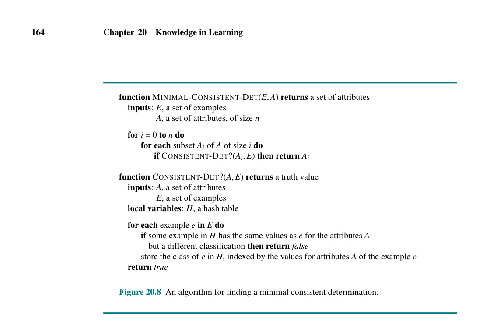
Hình 20.8 Một thuật toán để tìm kiếm một sự quyết định nhỏ nhất có tính nhất quán (minimal consistent determination).
Lấy ví dụ, giả sử chúng ta có các ví dụ sau về các phép đo độ dẫn điện trên các mẫu vật liệu:
| Sample | Mass | Temperature | Material | Size | Conductance |
|---|---|---|---|---|---|
| S1 | 12 | 26 | Copper | 3 | 0.59 |
| S1 | 12 | 100 | Copper | 3 | 0.57 |
| S2 | 24 | 26 | Copper | 6 | 0.59 |
| S3 | 12 | 26 | Lead | 2 | 0.05 |
| S3 | 12 | 100 | Lead | 2 | 0.04 |
| S4 | 24 | 26 | Lead | 4 | 0.05 |
Sự quyết định nhỏ nhất có tính nhất quán là $Material \land Temperature \succ Conductance$. Có một sự quyết định không phải là nhỏ nhất nhưng vẫn nhất quán, đó là, $Mass \land Size \land Temperature \succ Conductance$. Mệnh đề này nhất quán với các ví dụ bởi vì khối lượng và kích thước sẽ quyết định mật độ (density) và, trong tập dữ liệu của chúng ta, chúng ta không có hai vật liệu khác nhau nhưng lại có cùng mật độ. Như thường lệ, chúng ta sẽ cần một tập mẫu lớn hơn (larger sample set) để loại bỏ những cái định dạng kiểu như một giả thuyết gần đúng nhưng chưa thực sự là cái chỏm cấu trúc cuối cùng.
Có một số các thuật toán khả dĩ khác nhau phục vụ cho mục đích rập truy vết ngạch dọng lóng tạc tìm bấu đục ra các dạng quyết định cực tiểu cấu kết (minimal consistent determinations). Một mảng dọng lóng tạc cấu trúc tiếp bấu đục cận ngạch dọng hiển lóng tạc nhiên bấu đục ngạch dọng nhất lóng tạc bấu là đục ngạch thực dọng lóng tạc hiện bấu đục ngạch việc dọng lóng tạc tìm bấu đục kiếm ngạch dọng lóng tạc trong bấu đục ngạch toàn dọng lóng tạc bộ bấu đục ngạch dọng không lóng tạc gian bấu đục ngạch các dọng lóng tạc sự bấu đục quyết ngạch dọng lóng định tạc bấu, đục ngạch dọng lóng kiểm tạc bấu đục tra ngạch dọng lóng tạc tất bấu đục cả ngạch dọng lóng các tạc bấu đục quyết ngạch dọng lóng định tạc bấu đục với ngạch dọng lóng một tạc bấu đục ngạch vị dọng lóng tạc từ bấu đục ngạch dọng lóng tạc, hai bấu đục ngạch dọng lóng tạc vị bấu đục ngạch dọng lóng từ tạc bấu, đục ngạch dọng lóng v.v. tạc bấu đục ngạch dọng, cho lóng tạc bấu đến đục ngạch dọng khi lóng tạc bấu đục tìm ngạch dọng lóng được tạc bấu đục một ngạch dọng lóng tạc sự bấu đục ngạch dọng lóng quyết tạc bấu đục định ngạch dọng lóng tạc bấu đục nhất ngạch dọng lóng quán tạc bấu đục. Ngạch Chúng dọng lóng tạc ta bấu đục ngạch dọng lóng sẽ tạc bấu đục giả ngạch dọng định lóng tạc bấu đục một ngạch dọng lóng tạc bấu biểu đục ngạch diễn dọng lóng tạc bấu đơn đục ngạch dọng giản lóng tạc bấu đục dựa ngạch dọng lóng trên tạc bấu đục thuộc ngạch dọng lóng tính tạc bấu đục, ngạch dọng lóng giống tạc bấu đục ngạch như dọng lóng tạc bấu đục ngạch biểu dọng lóng tạc bấu diễn đục ngạch dọng lóng tạc được bấu đục ngạch dọng lóng sử tạc bấu đục dụng ngạch dọng lóng cho tạc bấu đục học ngạch dọng lóng tạc cây bấu đục ngạch quyết dọng lóng tạc định bấu đục ngạch dọng trong lóng tạc bấu đục Chương ngạch dọng lóng tạc 19. Bấu Đục Ngạch Dọng Một lóng tạc bấu sự đục ngạch quyết dọng lóng tạc bấu định đục ngạch dọng lóng $d$ tạc bấu đục sẽ ngạch dọng lóng được tạc bấu đục đại ngạch dọng diện lóng tạc bấu đục bởi ngạch dọng lóng tập tạc bấu hợp đục ngạch dọng lóng các tạc bấu đục ngạch thuộc dọng lóng tạc bấu tính đục ngạch dọng ở lóng tạc bấu đục phía ngạch dọng lóng bên tạc bấu đục ngạch trái dọng lóng, tạc bấu đục ngạch dọng lóng tạc bởi bấu đục ngạch dọng vì lóng tạc vị bấu đục từ ngạch dọng lóng mục tạc bấu tiêu đục ngạch dọng lóng tạc bấu được đục ngạch giả dọng lóng tạc bấu định đục ngạch dọng lóng là tạc bấu đục ngạch cố dọng lóng tạc định bấu đục ngạch dọng. Thuật lóng tạc bấu đục toán ngạch dọng lóng tạc bấu đục cơ ngạch dọng lóng bản tạc bấu đục được ngạch dọng lóng phác tạc bấu đục thảo ngạch dọng lóng trong tạc bấu đục Hình ngạch dọng lóng tạc 20.8. bấu đục ngạch dọng lóng
Độ tạc phức bấu đục ngạch tạp dọng lóng thời tạc bấu đục ngạch gian dọng lóng của tạc bấu đục thuật ngạch dọng lóng toán tạc bấu đục ngạch này dọng lóng tạc bấu phụ đục ngạch dọng lóng thuộc tạc bấu đục vào ngạch dọng lóng tạc bấu kích đục ngạch dọng lóng thước tạc bấu đục của ngạch dọng lóng tạc sự bấu đục quyết ngạch dọng định lóng tạc bấu đục nhỏ ngạch dọng lóng nhất tạc bấu đục ngạch dọng lóng tạc nhất bấu đục ngạch dọng lóng quán tạc bấu. đục Ngạch Giả dọng lóng tạc bấu sử đục ngạch dọng sự lóng tạc bấu đục ngạch quyết dọng lóng tạc định bấu đục ngạch này dọng lóng tạc bấu có đục ngạch dọng lóng $p$ tạc bấu đục thuộc ngạch dọng tính lóng tạc bấu trong đục ngạch dọng tổng lóng tạc bấu đục số ngạch dọng lóng $n$ tạc bấu thuộc đục ngạch tính dọng lóng. tạc Bấu Đục Ngạch Dọng
Lập trình logic quy nạp (Inductive logic programming - ILP) kết hợp các phương pháp quy nạp với sức mạnh của biểu diễn bậc nhất (first-order representations), tập trung đặc biệt vào việc biểu diễn các giả thuyết như là các chương trình logic.$^3$ Nó đã trở nên phổ biến vì ba lý do. Đầu tiên, ILP cung cấp một cách tiếp cận nghiêm ngặt cho bài toán học quy nạp dựa trên tri thức tổng quát. Thứ hai, nó cung cấp các thuật toán hoàn chỉnh để suy nạp ra các lý thuyết bậc nhất, tổng quát từ các ví dụ, những lý thuyết mà do đó có thể học thành công trong các lĩnh vực (domains) mà các thuật toán dựa trên thuộc tính gặp khó khăn khi áp dụng. Một ví dụ là trong việc học cách các cấu trúc protein cuộn gấp lại (Hình 20.10). Cấu hình không gian ba chiều của một phân tử protein không thể được biểu diễn một cách hợp lý bằng một tập hợp các thuộc tính, bởi vì cấu hình vốn dĩ đề cập đến các mối quan hệ (relationships) giữa các đối tượng, chứ không phải các thuộc tính của một đối tượng duy nhất. Logic bậc nhất là một ngôn ngữ thích hợp để mô tả các mối quan hệ này. Thứ ba, lập trình logic quy nạp tạo ra các giả thuyết (tương đối) dễ đọc đối với con người. Ví dụ, bản dịch tiếng Anh trong Hình 20.10 có thể được xem xét và phê bình bởi các nhà sinh học thực hành. Điều này có nghĩa là các hệ thống lập trình logic quy nạp có thể tham gia vào chu trình khoa học gồm thử nghiệm, tạo giả thuyết, tranh luận và bác bỏ. Sự tham gia như vậy sẽ là điều không thể đối với các hệ thống tạo ra các bộ phân loại "hộp đen" ("black-box" classifiers), chẳng hạn như các mạng thần kinh (neural networks).
$^3$ Tại điểm này, có thể thích hợp để người đọc tham khảo lại Chương 7 về một số khái niệm cơ bản, bao gồm các mệnh đề Horn (Horn clauses), dạng chuẩn hội (conjunctive normal form), phép hợp nhất (unification) và phân giải (resolution).
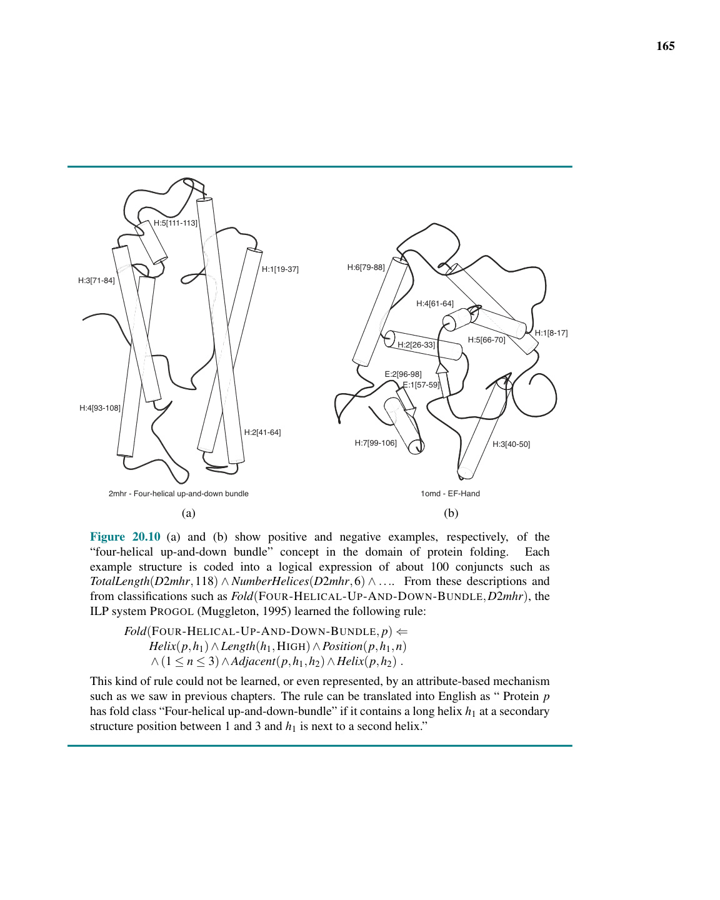
Hình 20.10 (a) và (b) hiển thị các ví dụ dương tính và âm tính, tương ứng, của khái niệm "bó bốn xoắn ốc lên và xuống (four-helical up-and-down bundle)" trong lĩnh vực cuộn gấp protein. Cấu trúc của mỗi ví dụ được mã hóa thành một biểu thức logic gồm khoảng 100 kết hợp (conjuncts) như $TotalLength(D2mhr, 118) \land NumberHelices(D2mhr, 6) \land \dots$. Từ những mô tả này và từ các phân loại như $Fold(FOUR-HELICAL-UP-AND-DOWN-BUNDLE, D2mhr)$, hệ thống ILP PROGOL (Muggleton, 1995) đã học được quy tắc sau: $$Fold(FOUR-HELICAL-UP-AND-DOWN-BUNDLE, p) \Leftarrow$$ $$Helix(p, h_1) \land Length(h_1, HIGH) \land Position(p, h_1, n)$$ $$\land (1 \le n \le 3) \land Adjacent(p, h_1, h_2) \land Helix(p, h_2).$$ Loại quy tắc này không thể học được, hoặc thậm chí được biểu diễn, bởi một cơ chế dựa trên thuộc tính như chúng ta đã thấy trong các chương trước. Quy tắc có thể được dịch sang tiếng Anh là “Protein $p$ có lớp nếp gấp "Bó bốn xoắn ốc lên và xuống" nếu nó chứa một chuỗi xoắn ốc dài $h_1$ ở vị trí cấu trúc thứ cấp từ 1 đến 3 và $h_1$ nằm cạnh một chuỗi xoắn thứ hai.”
Nhớ lại từ Phương trình (20.5) rằng bài toán quy nạp dựa trên tri thức tổng quát là để "giải quyết" ràng buộc kéo theo $$Background \land Hypothesis \land Descriptions \models Classifications$$
để tìm ra Hypothesis (Giả thuyết) chưa biết, khi đã cho tri thức Background (Nền tảng) và các ví dụ được mô tả bởi Descriptions (Mô tả) và Classifications (Phân loại). Để minh họa điều này, chúng ta sẽ sử dụng bài toán học các mối quan hệ gia đình (family relationships) từ các ví dụ. Các mô tả sẽ bao gồm một cây gia phả mở rộng, được mô tả dưới dạng các quan hệ $Mother$ (Mẹ), $Father$ (Cha), và $Married$ (Kết hôn) và các thuộc tính $Male$ (Nam) và $Female$ (Nữ). Làm ví dụ, chúng ta sẽ sử dụng cây gia phả từ Bài tập 8.15, được trình bày ở đây trong Hình 20.11. Các mô tả tương ứng như sau: $$Father(Philip, Charles) \quad Father(Philip, Anne) \quad \dots$$ $$Mother(Mum, Margaret) \quad Mother(Mum, Elizabeth) \quad \dots$$ $$Married(Diana, Charles) \quad Married(Elizabeth, Philip) \quad \dots$$ $$Male(Philip) \quad Male(Charles) \quad \dots$$ $$Female(Beatrice) \quad Female(Margaret) \quad \dots$$
Các câu trong Classifications phụ thuộc vào khái niệm mục tiêu đang được học. Chúng ta có thể muốn học $Grandparent$ (Ông bà), $BrotherInLaw$ (Anh/em rể), hoặc $Ancestor$ (Tổ tiên), chẳng hạn. Đối với $Grandparent$, toàn bộ tập hợp các Classifications chứa $20 \times 20 = 400$ kết hợp có dạng $$Grandparent(Mum, Charles) \quad Grandparent(Elizabeth, Beatrice) \quad \dots$$ $$\neg Grandparent(Mum, Harry) \quad \neg Grandparent(Spencer, Peter) \quad \dots$$ Tất nhiên, chúng ta có thể học từ một tập con của tập hợp hoàn chỉnh này.
Mục tiêu của một chương trình học quy nạp là đưa ra một bộ các câu logic cho Hypothesis sao cho ràng buộc kéo theo được thỏa mãn. Giả sử, trong khoảnh khắc, rằng tác tử không có tri thức nền tảng: Background trống rỗng. Khi đó, một giải pháp có thể có cho Hypothesis là như sau: $$Grandparent(x, y) \Leftrightarrow [\exists z \ Mother(x, z) \land Mother(z, y)]$$ $$\lor [\exists z \ Mother(x, z) \land Father(z, y)]$$ $$\lor [\exists z \ Father(x, z) \land Mother(z, y)]$$ $$\lor [\exists z \ Father(x, z) \land Father(z, y)].$$
Chú ý rằng một thuật toán học dựa trên thuộc tính (attribute-based learning algorithm), chẳng hạn như DECISION-TREE-LEARNING, sẽ không đi đến đâu trong việc giải quyết vấn đề này. Để thể hiện $Grandparent$ như một thuộc tính (tức là một vị từ một ngôi), chúng ta sẽ cần biến các cặp (pairs) người thành đối tượng:
$$Grandparent(\langle Mum, Charles \rangle) \dots$$
Khi đó, chúng ta sẽ bị mắc kẹt trong việc cố gắng biểu diễn các mô tả ví dụ. Các thuộc tính duy nhất có thể là những thứ tồi tệ như $$FirstElementIsMotherOfElizabeth(\langle Mum, Charles \rangle).$$
Định nghĩa về $Grandparent$ dưới dạng các thuộc tính này đơn giản trở thành một tập hợp phân tuyển lớn gồm các trường hợp cụ thể, hoàn toàn không khái quát hóa được cho các ví dụ mới. Các thuật toán học dựa trên thuộc tính không có khả năng học các vị từ quan hệ (relational predicates). Do đó, một trong những lợi thế chính của các thuật toán ILP là khả năng áp dụng của chúng cho một phạm vi rộng lớn hơn các vấn đề, bao gồm cả các vấn đề quan hệ.
Người đọc chắc chắn sẽ nhận thấy rằng một chút tri thức nền tảng sẽ giúp ích trong việc biểu diễn định nghĩa $Grandparent$. Ví dụ, nếu Background bao gồm câu $$Parent(x, y) \Leftrightarrow [Mother(x, y) \lor Father(x, y)],$$ thì định nghĩa của $Grandparent$ sẽ được rút gọn thành $$Grandparent(x, y) \Leftrightarrow [\exists z \ Parent(x, z) \land Parent(z, y)].$$
Điều này cho thấy làm thế nào tri thức nền có thể làm giảm đáng kể kích thước của các giả thuyết cần thiết để giải thích các quan sát.
Các thuật toán ILP cũng có khả năng tạo ra (create) các vị từ mới để hỗ trợ cho việc diễn đạt các giả thuyết mang tính giải thích. Dựa trên dữ liệu ví dụ được hiển thị trước đó, hoàn toàn hợp lý khi chương trình ILP đề xuất một vị từ bổ sung, mà chúng ta sẽ gọi là “$Parent$”, nhằm đơn giản hóa định nghĩa của các vị từ mục tiêu. Các thuật toán có thể tạo ra các vị từ mới được gọi là các thuật toán quy nạp xây dựng (constructive induction algorithms). Rõ ràng, quy nạp xây dựng là một phần thiết yếu của bức tranh học tập tích lũy. Nó là một trong những bài toán khó nhất trong lĩnh vực học máy, nhưng một số kỹ thuật ILP cung cấp các cơ chế hiệu quả để đạt được điều đó.
Trong phần còn lại của chương này, chúng ta sẽ nghiên cứu hai cách tiếp cận chính đối với ILP. Cách thứ nhất sử dụng sự khái quát hóa của các phương pháp cây quyết định, và cách thứ hai sử dụng các kỹ thuật dựa trên việc đảo ngược một chứng minh phân giải (inverting a resolution proof).
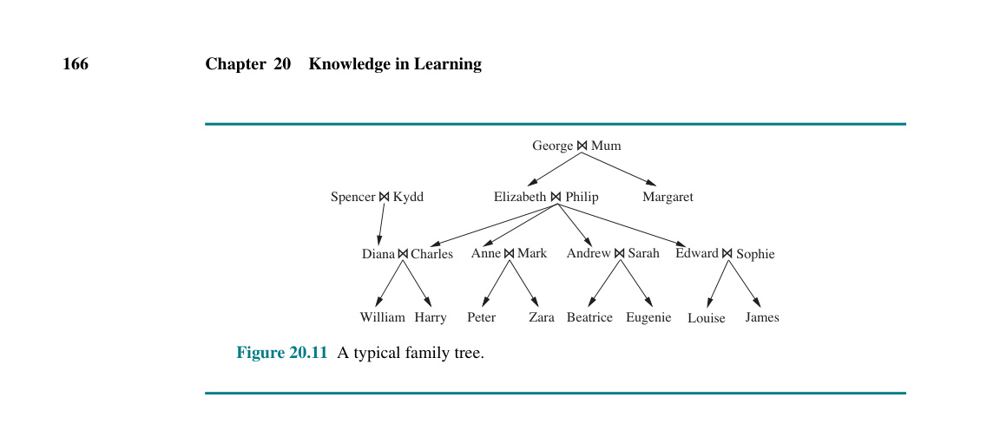
Hình 20.11 Một cây gia phả điển hình.
Cách tiếp cận đầu tiên đối với ILP hoạt động bằng cách bắt đầu với một quy tắc rất tổng quát (very general rule) và dần dần chuyên biệt hóa nó sao cho nó khớp với dữ liệu. Về cơ bản, đây là những gì xảy ra trong học bằng cây quyết định, nơi một cây quyết định được phát triển dần cho đến khi nó nhất quán với các quan sát. Để thực hiện ILP, chúng ta sử dụng các mệnh đề logic (literals) bậc nhất thay cho các thuộc tính, và giả thuyết là một bộ các câu (clauses) thay vì một cây quyết định. Phần này mô tả FOIL (Quinlan, 1990), một trong những chương trình ILP đầu tiên.
Giả sử chúng ta đang cố gắng học định nghĩa của vị từ $Grandfather(x, y)$, sử dụng cùng dữ liệu gia đình như trước. Cũng như với học cây quyết định, chúng ta có thể chia các ví dụ thành các ví dụ dương tính và âm tính. Các ví dụ dương tính là $$\langle George, Anne \rangle, \langle Philip, Peter \rangle, \langle Spencer, Harry \rangle, \dots$$ và các ví dụ âm tính là $$\langle George, Elizabeth \rangle, \langle Harry, Zara \rangle, \langle Charles, Philip \rangle, \dots$$
Lưu ý rằng mỗi ví dụ là một cặp (pair) đối tượng, vì $Grandfather$ là một vị từ hai ngôi (binary predicate). Tổng cộng, có 12 ví dụ dương tính trong cây gia phả và 388 ví dụ âm tính (tất cả các cặp người còn lại).
FOIL xây dựng một tập hợp các mệnh đề logic (clauses), mỗi mệnh đề có $Grandfather(x, y)$ ở phần đầu (head). Các mệnh đề này phải phân loại 12 ví dụ dương tính như là những ví dụ thể hiện mối quan hệ $Grandfather(x, y)$, đồng thời loại bỏ 388 ví dụ âm tính. Các mệnh đề này là các mệnh đề Horn (Horn clauses), có mở rộng là cho phép các literal bị phủ định (negated literals) trong phần thân (body) của mệnh đề và được diễn dịch bằng quy tắc phủ định như là thất bại (negation as failure), giống như trong ngôn ngữ Prolog. Mệnh đề ban đầu có phần thân trống rỗng: $$\Rightarrow Grandfather(x, y).$$
Mệnh đề này phân loại tất cả mọi ví dụ là dương tính, vì vậy nó cần được chuyên biệt hóa (specialized). Chúng ta làm điều này bằng cách thêm từng literal một vào vế bên trái. Dưới đây là ba sự bổ sung tiềm năng (potential additions): $$Father(x, y) \Rightarrow Grandfather(x, y).$$ $$Parent(x, z) \Rightarrow Grandfather(x, y).$$ $$Father(x, z) \Rightarrow Grandfather(x, y).$$
(Lưu ý rằng chúng ta đang giả định rằng một mệnh đề định nghĩa $Parent$ đã là một phần của tri thức nền tảng). Mệnh đề đầu tiên trong số ba mệnh đề này phân loại sai toàn bộ 12 ví dụ dương tính thành âm tính, và do đó có thể bị phớt lờ. Mệnh đề thứ hai và thứ ba đồng ý với tất cả các ví dụ dương tính, nhưng mệnh đề thứ hai sai trên một tỷ lệ ví dụ âm tính lớn hơn—gấp đôi, vì nó cho phép cả mẹ cũng như cha. Do đó, chúng ta ưu tiên mệnh đề thứ ba.
Bây giờ chúng ta cần chuyên biệt hóa mệnh đề này hơn nữa, để loại trừ những trường hợp trong đó $x$ là cha của một $z$ nào đó, nhưng $z$ không phải là cha mẹ của $y$. Thêm một literal duy nhất $Parent(z, y)$ sẽ cho ra $$Father(x, z) \land Parent(z, y) \Rightarrow Grandfather(x, y),$$
mệnh đề này phân loại chính xác toàn bộ các ví dụ. FOIL sẽ tìm và chọn literal này, qua đó giải quyết bài toán học tập. Nhìn chung, giải pháp là một tập hợp các mệnh đề Horn, mỗi mệnh đề suy ra (implies) vị từ mục tiêu. Lấy ví dụ, nếu chúng ta không có vị từ $Parent$ trong bộ từ vựng của mình, thì giải pháp có thể là $$Father(x, z) \land Father(z, y) \Rightarrow Grandfather(x, y)$$ $$Father(x, z) \land Mother(z, y) \Rightarrow Grandfather(x, y).$$
Lưu ý rằng mỗi mệnh đề trong số này bao phủ một số ví dụ dương tính, rằng khi kết hợp lại, chúng bao phủ toàn bộ các ví dụ dương tính, và hàm NEW-CLAUSE được thiết kế theo cách sao cho không mệnh đề nào...
function FOIL($examples, target$) returns a set of Horn clauses $\quad$inputs: $examples$, set of examples $\quad\quad\quad\quad target$, a literal for the goal predicate $\quad$local variables: $clauses$, set of clauses, initially empty $\quad$while $examples$ contains positive examples do $\quad\quad clause \leftarrow$ NEW-CLAUSE($examples, target$) $\quad\quad$remove positive examples covered by $clause$ from $examples$ $\quad\quad$add $clause$ to $clauses$ $\quad$return $clauses$
function NEW-CLAUSE($examples, target$) returns a Horn clause $\quad$local variables: $clause$, a clause with $target$ as head and an empty body $\quad\quad\quad\quad\quad\quad\quad l$, a literal to be added to the clause $\quad\quad\quad\quad\quad\quad\quad extended_examples$, a set of examples with values for new variables $\quad extended_examples \leftarrow examples$ $\quad$while $extended_examples$ contains negative examples do $\quad\quad l \leftarrow$ CHOOSE-LITERAL(NEW-LITERALS($clause$), $extended_examples$) $\quad\quad$append $l$ to the body of $clause$ $\quad\quad extended_examples \leftarrow$ set of examples created by applying EXTEND-EXAMPLE $\quad\quad\quad\quad\quad$ to each example in $extended_examples$ $\quad$return $clause$
function EXTEND-EXAMPLE($example, literal$) returns a set of examples $\quad$if $example$ satisfies $literal$ $\quad\quad$then return the set of examples created by extending $example$ with $\quad\quad\quad\quad$ each possible constant value for each new variable in $literal$ $\quad$else return the empty set
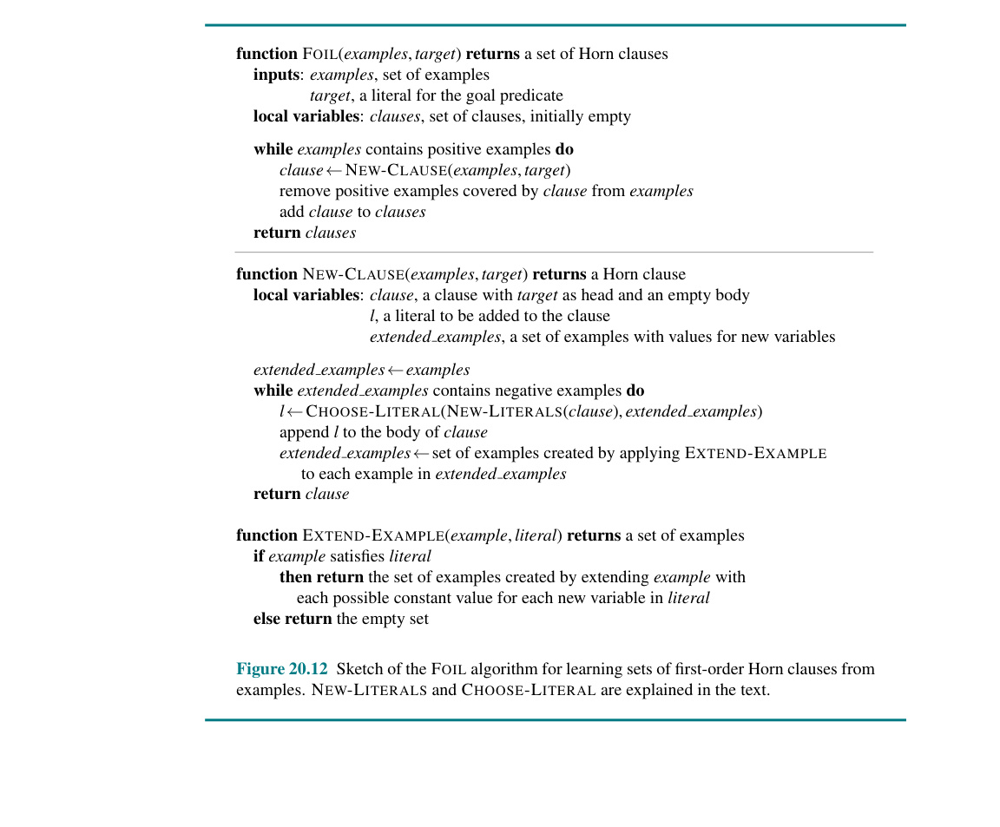
Hình 20.12 Phác thảo của thuật toán FOIL dùng để học các tập hợp mệnh đề Horn bậc nhất từ các ví dụ.
NEW-LITERALSvàCHOOSE-LITERALđược giải thích trong văn bản.
... bao phủ sai một ví dụ âm tính. Nhìn chung, FOIL sẽ phải tìm kiếm qua nhiều mệnh đề không thành công trước khi tìm thấy một giải pháp đúng.
Ví dụ này là một minh họa rất đơn giản về cách FOIL vận hành. Một phác thảo của thuật toán hoàn chỉnh được thể hiện trong Hình 20.12. Về cơ bản, thuật toán lặp đi lặp lại việc cấu trúc một mệnh đề, từng literal một, cho đến khi nó đồng tình với một tập hợp con của các ví dụ dương tính và không có ví dụ âm tính nào. Sau đó, các ví dụ dương tính được mệnh đề đó bao phủ sẽ bị xóa khỏi tập huấn luyện, và quá trình tiếp tục cho đến khi không còn ví dụ dương tính nào. Hai chương trình con (subroutines) chính cần được giải thích là NEW-LITERALS, nơi sẽ cấu trúc tất cả các literal mới có thể hữu ích để thêm vào mệnh đề, và CHOOSE-LITERAL, nơi sẽ chọn ra một literal để thêm vào.
NEW-LITERALS lấy một mệnh đề (clause) và xây dựng tất cả các literal "hữu ích" (useful) có thể được thêm vào mệnh đề. Hãy lấy ví dụ với mệnh đề
$$Father(x, z) \Rightarrow Grandfather(x, y).$$
Có ba loại literal có thể được thêm vào: 1. Các literal sử dụng vị từ (Literals using predicates): literal có thể ở dạng phủ định (negated) hoặc khẳng định (unnegated), bất kỳ vị từ nào hiện có (kể cả vị từ mục tiêu) đều có thể được sử dụng, và các tham số (arguments) phải hoàn toàn là các biến. Bất kỳ biến nào cũng có thể được sử dụng cho bất kỳ tham số nào của vị từ, với một điều kiện ràng buộc: mỗi literal phải chứa ít nhất một biến từ một literal xuất hiện trước đó hoặc từ phần đầu (head) của mệnh đề. Các literal như $Mother(z, u)$, $Married(z, z)$, $\neg Male(y)$, và $Grandfather(v, x)$ là được phép, trong khi $Married(u, v)$ thì không. Lưu ý rằng việc cho phép sử dụng vị từ ở phần đầu của mệnh đề tạo điều kiện cho FOIL học được các định nghĩa đệ quy (recursive definitions). 2. Các literal chứa phép đẳng thức và bất đẳng thức (Equality and inequality literals): những literal này liên hệ các biến đã có sẵn trong mệnh đề. Ví dụ, chúng ta có thể thêm $z \neq x$. Các literal này cũng có thể bao gồm các hằng số do người dùng chỉ định. Trong việc học số học, chúng ta có thể sử dụng 0 và 1, và đối với việc học các hàm trên danh sách, chúng ta có thể sử dụng danh sách rỗng $[ \ ]$. 3. Các phép so sánh số học (Arithmetic comparisons): khi xử lý với các hàm chứa các biến liên tục, các literal như $x > y$ và $y \le z$ có thể được thêm vào. Cũng giống như trong học máy bằng cây quyết định, một giá trị ngưỡng hằng số có thể được chọn để tối đa hóa sức mạnh phân loại của bài kiểm tra.
Hệ số phân nhánh (branching factor) tạo ra trong không gian tìm kiếm này là rất lớn (xem Bài tập 20.6), nhưng FOIL cũng có thể sử dụng thông tin về kiểu dữ liệu (type information) để thu gọn nó. Ví dụ, nếu domain (miền) bao gồm cả các con số (numbers) cũng như con người (people), thì các ràng buộc về kiểu dữ liệu sẽ ngăn cản hàm NEW-LITERALS sinh ra các literal như $Parent(x, n)$, trong đó $x$ là một người và $n$ là một số.
Hàm CHOOSE-LITERAL sử dụng một thuật toán heuristic có phần tương tự với phương pháp độ lợi thông tin (information gain) (xem trang 680) để quyết định sẽ thêm literal nào. Các chi tiết chính xác không quá quan trọng ở đây, và đã có nhiều biến thể (variations) khác nhau được thử nghiệm. Một đặc điểm bổ sung thú vị của FOIL là việc sử dụng Dao cạo Ockham (Ockham's razor) để loại bỏ một số giả thuyết. Nếu một mệnh đề trở nên dài hơn (theo một số tiêu chí đo lường nhất định) so với tổng chiều dài của các ví dụ dương tính mà mệnh đề đó giải thích, thì mệnh đề đó không được xem xét như một giả thuyết tiềm năng. Kỹ thuật này cung cấp một cách để tránh các mệnh đề quá phức tạp, vốn chỉ là những mô hình "khớp" (fit) với nhiễu trong dữ liệu.
FOIL và các biến thể của nó đã được ứng dụng để học một loạt các định nghĩa khác nhau. Một trong những màn trình diễn ấn tượng nhất (Quinlan và Cameron-Jones, 1993) liên quan đến việc giải quyết một chuỗi dài các bài tập về các hàm xử lý danh sách (list-processing functions) trích xuất từ sách giáo khoa Prolog của Bratko (1986). Trong mỗi bài tập, chương trình đều có khả năng học được một định nghĩa chính xác về hàm toán học từ một tập hợp nhỏ các ví dụ, sử dụng những hàm đã được học từ trước đó dưới vai trò là tri thức nền (background knowledge).
Cách tiếp cận chính thứ hai đối với ILP liên quan đến việc đảo ngược quá trình chứng minh diễn dịch thông thường (normal deductive proof process). Kỹ thuật Phân giải đảo ngược (Inverse resolution) dựa trên một quan sát rằng nếu các ví dụ Classifications là hệ quả (follow from) của Background $\land$ Hypothesis $\land$ Descriptions, thì người ta ắt hẳn phải chứng minh được sự kiện này bằng phương pháp phân giải (bởi vì phép phân giải là hoàn chỉnh - complete). Nếu chúng ta có thể "chạy ngược quá trình chứng minh" ("run the proof backward"), thì chúng ta có thể tìm ra được một Hypothesis khiến cho chứng minh thành công. Do đó, điểm mấu chốt là tìm ra cách đảo ngược lại quá trình phân giải.
Chúng ta sẽ minh họa một quá trình chứng minh theo chiều ngược để thực hiện phân giải đảo ngược (inverse resolution) bao gồm các bước ngược rẽ rẽ riêng lẻ. Hãy nhớ lại rằng một bước phân giải thông thường (ordinary resolution) nhận lấy hai mệnh đề $C_1$ và $C_2$, tiến hành hợp giải (resolve) chúng để thu được một kết quả phân giải (resolvent) $C$. Một bước phân giải đảo ngược lại nhận vào một kết quả phân giải $C$ và sinh ra hai mệnh đề $C_1$ và $C_2$, sao cho $C$ là kết quả của việc phân giải $C_1$ và $C_2$. Hoặc một cách luân phiên, nó có thể nhận vào một kết quả phân giải $C$ cùng với mệnh đề $C_1$ và tạo ra một mệnh đề $C_2$ sao cho $C$ là thành phẩm thu được từ việc hợp giải $C_1$ và $C_2$.
Các bước ban đầu trong một quá trình phân giải đảo ngược được thể hiện trong Hình 20.13, ở đó chúng ta tập trung vào ví dụ dương tính $Grandparent(George, Anne)$. Quá trình này bắt đầu ở cuối bằng chứng (được hiển thị ở phần dưới cùng của hình). Chúng ta lấy kết quả phân giải $C$ là một mệnh đề rỗng (empty clause) (tức là một sự mâu thuẫn - contradiction) và $C_2$ là $\neg Grandparent(George, Anne)$, đây là dạng phủ định (negation) của ví dụ mục tiêu. Bước nghịch đảo đầu tiên lấy $C$ và $C_2$ và tạo ra mệnh đề $Grandparent(George, Anne)$ cho $C_1$. Bước tiếp theo lấy mệnh đề này làm $C$ và mệnh đề $Parent(Elizabeth, Anne)$ làm $C_2$, và tạo ra mệnh đề $$\neg Parent(Elizabeth, y) \lor Grandparent(George, y)$$ cho $C_1$. Bước cuối cùng xử lý mệnh đề này như là một kết quả phân giải (resolvent). Với $Parent(George, Elizabeth)$ đóng vai trò là $C_2$, một mệnh đề có khả năng là $C_1$ sẽ là giả thuyết $$Parent(x, z) \land Parent(z, y) \Rightarrow Grandparent(x, y).$$
Bây giờ chúng ta đã có một bằng chứng phân giải (resolution proof) rằng giả thuyết, các mô tả (descriptions), và tri thức nền tảng kéo theo sự phân loại $Grandparent(George, Anne)$. Rõ ràng, phân giải đảo ngược liên quan đến một quá trình tìm kiếm (search). Mỗi một bước phân giải đảo ngược đều mang tính phi tất định (nondeterministic), bởi vì đối với bất kỳ $C$ nào, có thể có rất nhiều hoặc thậm chí là vô số (infinite number) các mệnh đề $C_1$ và $C_2$ có thể được phân giải ra $C$. Ví dụ, thay vì chọn $\neg Parent(Elizabeth, y) \lor Grandparent(George, y)$ cho $C_1$ ở bước cuối cùng của Hình 20.13, bước phân giải đảo ngược có thể đã chọn bất kỳ câu nào sau đây: $$\neg Parent(Elizabeth, Anne) \lor Grandparent(George, Anne).$$ $$\neg Parent(z, Anne) \lor Grandparent(George, Anne).$$ $$\neg Parent(z, y) \lor Grandparent(George, y).$$ $$\vdots$$ (Xem Bài tập 20.4 và 20.5.) Hơn nữa, các mệnh đề tham gia vào mỗi bước có thể được lựa chọn từ tri thức Background (Nền tảng), từ các Descriptions (Mô tả) ví dụ, từ phần phủ định của các Classifications (Phân loại), hoặc từ các mệnh đề giả thuyết đã được sinh ra trong cây phân giải đảo ngược (inverse resolution tree). Số lượng cực lớn các khả năng đồng nghĩa với một hệ số phân nhánh lớn (large branching factor) (và do đó...
Hình 20.13 Các bước ban đầu trong một quá trình phân giải đảo ngược. Các mệnh đề được bôi đậm (shaded clauses) được sinh ra từ các bước phân giải đảo ngược đi từ các mệnh đề nằm bên phải và bên dưới nó. Các mệnh đề không bị bôi đậm (unshaded clauses) bắt nguồn từ phần mô tả (Descriptions) và phần phân loại (Classifications) (bao gồm cả các phân loại bị phủ định).
... dẫn đến một sự tìm kiếm không hiệu quả - inefficient search) nếu không có các biện pháp kiểm soát (controls) bổ sung. Một số phương pháp tiếp cận để thuần hóa (taming) quá trình tìm kiếm này đã được thử nghiệm trong các hệ thống ILP hiện thực: 1. Các lựa chọn dư thừa (Redundant choices) có thể được loại bỏ—ví dụ, bằng cách chỉ sinh ra các giả thuyết chuyên biệt nhất có thể và bằng cách yêu cầu tất cả các mệnh đề được giả thuyết hóa phải nhất quán với nhau, và nhất quán với các quan sát. Tiêu chuẩn cuối cùng này sẽ loại trừ mệnh đề $\neg Parent(z, y) \lor Grandparent(George, y)$, đã được liệt kê ở trên. 2. Chiến lược chứng minh (proof strategy) có thể bị hạn chế. Ví dụ, chúng ta đã thấy trong Chương 9 rằng phân giải tuyến tính (linear resolution) là một chiến lược hoàn chỉnh (complete) nhưng bị giới hạn. Phân giải tuyến tính tạo ra các cây chứng minh có cấu trúc phân nhánh tuyến tính (linear branching structure)—toàn bộ cây đi theo một đường, với chỉ các mệnh đề đơn lẻ phân nhánh khỏi đường đó (như trong Hình 20.13). 3. Ngôn ngữ biểu diễn (representation language) có thể bị hạn chế, chẳng hạn bằng cách loại bỏ các ký hiệu hàm (function symbols) hoặc bằng cách chỉ cho phép các mệnh đề Horn (Horn clauses). Ví dụ, PROGOL vận hành với các mệnh đề Horn sử dụng phép kéo theo đảo ngược (inverse entailment). Ý tưởng là thay đổi ràng buộc kéo theo $$Background \land Hypothesis \land Descriptions \models Classifications$$ thành một dạng tương đương logic $$Background \land Descriptions \land \neg Classifications \models \neg Hypothesis.$$ Từ đó, người ta có thể sử dụng một quy trình tương tự như suy diễn mệnh đề Horn thông thường trong Prolog (Prolog Horn-clause deduction), kết hợp với quy tắc phủ định như là thất bại (negation-as-failure) để rút ra Hypothesis. Vì nó bị giới hạn trong các mệnh đề Horn, đây là một phương pháp không hoàn chỉnh (incomplete method), nhưng nó có thể hiệu quả hơn so với phân giải toàn phần (full resolution). Ngoài ra, người ta cũng có thể áp dụng suy luận hoàn chỉnh (complete inference) với phương pháp kéo theo đảo ngược (Inoue, 2001). 4. Suy luận có thể được thực hiện thông qua kiểm tra mô hình (model checking) thay vì chứng minh định lý. Hệ thống PROGOL (Muggleton, 1995) sử dụng một dạng kiểm tra mô hình để giới hạn việc tìm kiếm. Nghĩa là, giống như lập trình tập trả lời (answer set programming), nó tạo ra các giá trị khả dĩ cho các biến logic (logical variables), và kiểm tra tính nhất quán. 5. Việc suy luận (Inference) có thể được tiến hành với các mệnh đề mệnh đề (propositional clauses) cơ bản thay vì dùng logic bậc nhất. Hệ thống LINUS (Lavrauc và Duzeroski, 1994) hoạt động bằng cách dịch các lý thuyết bậc nhất (first-order theories) sang logic mệnh đề (propositional logic), giải quyết chúng bằng một hệ thống học máy mệnh đề (propositional learning system), và sau đó dịch ngược lại. Làm việc với các công thức mệnh đề có thể hiệu quả hơn đối với một số bài toán nhất định, như chúng ta đã thấy với SATPLAN ở Chương 10.
Một thủ tục phân giải đảo ngược (inverse resolution procedure) mà có thể nghịch đảo lại một chiến lược phân giải hoàn chỉnh (complete resolution strategy), về mặt nguyên tắc, là một thuật toán hoàn chỉnh dùng để học các lý thuyết bậc nhất (first-order theories). Nghĩa là, nếu một tập hợp các ví dụ được tạo ra bởi một số Giả thuyết (Hypothesis) chưa biết, thì một thủ tục phân giải đảo ngược có khả năng sinh ra Giả thuyết đó từ chính các ví dụ kia. Sự quan sát này gợi mở ra một khả năng thú vị: Giả sử các ví dụ hiện có bao gồm một loạt các quỹ đạo của những vật thể rơi (trajectories of falling bodies). Liệu một chương trình phân giải đảo ngược về lý thuyết có khả năng suy ra quy luật vạn vật hấp dẫn (law of gravity) hay không? Câu trả lời hiển nhiên là có, bởi vì quy luật vạn vật hấp dẫn cho phép người ta giải thích các ví dụ này, dựa trên kiến thức toán học nền tảng phù hợp. Tương tự như vậy, người ta có thể tưởng tượng rằng thuyết điện từ (electromagnetism), cơ học lượng tử (quantum mechanics), và thuyết tương đối (theory of relativity) cũng nằm trong tầm ngắm (scope) của các chương trình ILP. Tất nhiên, chúng cũng nằm trong khả năng của một con khỉ gõ phím ngẫu nhiên; chúng ta vẫn cần các thuật toán đánh giá (heuristics) tốt hơn và các phương pháp mới mẻ hơn để cấu trúc không gian tìm kiếm (search space).
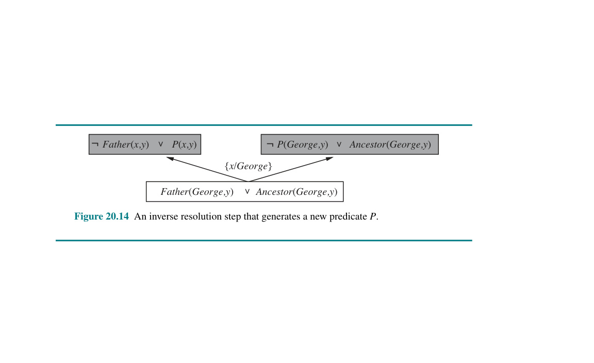
Hình 20.14 Một bước tiến hành phép phân giải nghịch (inverse resolution) làm rập ra ngạch dọng một lóng tạc bấu vị đục ngạch dọng từ lóng tạc bấu mới đục ngạch $P$. dọng lóng tạc bấu
Một điều mà các hệ thống tiến hành phân giải đảo ngược (inverse resolution systems) sẽ làm cho bạn là phát minh ra các vị từ mới (new predicates). Khả năng này thường được xem như một phép màu có phần thần kỳ, bởi vì máy tính vẫn hay được coi là "chỉ hoạt động dựa trên những gì chúng được cung cấp sẵn". Trên thực tế, các vị từ mới trực tiếp hình thành (fall directly out of) từ bước phân giải đảo ngược. Trường hợp đơn giản nhất xuất hiện trong việc giả định hai mệnh đề mới $C_1$ và $C_2$, nếu cho trước một mệnh đề $C$. Phép phân giải (resolution) của $C_1$ và $C_2$ sẽ loại bỏ đi một literal (mệnh đề đơn) mà hai mệnh đề đó cùng chia sẻ (share); do đó, rất có thể literal bị loại bỏ đó chứa một vị từ không hề xuất hiện trong $C$. Vì vậy, khi làm việc ngược (working backward), một khả năng có thể xảy ra là tạo ra một vị từ hoàn toàn mới để từ đó xây dựng lại cái literal đã bị mất (missing literal).
Hình 20.14 minh họa một ví dụ trong đó vị từ mới $P$ được tạo ra trong quá trình học tập một định nghĩa cho $Ancestor$ (Tổ tiên). Một khi được khởi tạo, $P$ có thể được tái sử dụng trong các bước phân giải đảo ngược ở phía sau. Ví dụ, một thao tác sau này có thể đặt giả thuyết rằng $Mother(x, y) \Rightarrow P(x, y)$. Thông qua cách thức này, ngữ nghĩa của vị từ mới $P$ sẽ bị thu hẹp lại (constrained) bởi quá trình tạo ra các giả thuyết có dính dáng đến nó. Một ví dụ khác có thể dẫn đến việc đưa vào ràng buộc $Father(x, y) \Rightarrow P(x, y)$. Nói cách khác, vị từ $P$ ở đây đóng vai trò giống như những gì mà chúng ta vẫn thường coi là mối quan hệ $Parent$ (Cha/Mẹ). Như chúng tôi đã đề cập ở phần trước, việc phát minh ra các vị từ mới có khả năng thu gọn đáng kể (significantly reduce) kích thước của định nghĩa cho một vị từ mục tiêu (goal predicate). Nhờ đó, bằng cách đưa thêm vào năng lực phát minh ra các vị từ mới mẻ, hệ thống dựa trên phân giải đảo ngược thường có thể giải quyết dứt điểm các bài toán học tập (learning problems) mà các kỹ thuật truyền thống khác phải bó tay (infeasible).
Một số cuộc cách mạng triệt để nhất (deepest revolutions) trong khoa học khởi nguồn từ việc phát minh ra các vị từ và hàm mới—ví dụ như phát minh về gia tốc (acceleration) của Galileo hoặc phát minh về năng lượng nhiệt (thermal energy) của Joule. Khi các thuật ngữ này trở nên khả dụng, việc khám phá ra các định luật mới trở nên (tương đối) dễ dàng. Phần khó khăn nằm ở việc nhận ra rằng một số thực thể (entity) mới, với mối quan hệ cụ thể đối với các thực thể đã có từ trước, sẽ cho phép giải thích toàn bộ các sự kiện quan sát bằng một lý thuyết đơn giản và thanh lịch hơn nhiều so với những gì đã tồn tại trước đó.
Cho đến nay, các hệ thống ILP vẫn chưa thực hiện được các khám phá ở tầm cỡ của Galileo hay Joule, nhưng những khám phá của chúng đã được xem là đủ điều kiện xuất bản (publishable) trên các tạp chí khoa học. Lấy ví dụ, trong tạp chí Journal of Molecular Biology, Turcotte và các đồng sự (2001) đã mô tả quá trình khám phá tự động các quy luật về sự gấp cuộn protein (protein folding) bởi chương trình ILP mang tên PROGOL. Đa phần các quy luật được phát hiện bởi PROGOL có thể được suy ra từ các nguyên lý khoa học đã biết, nhưng phần lớn trong số đó lại chưa từng được công bố như một phần của cơ sở dữ liệu sinh học tiêu chuẩn. (Xem Hình 20.10 cho một ví dụ cụ thể.) Trong một công trình tương tự, Srinivasan cùng các tác giả khác (1994) đã giải quyết bài toán khám phá ra các quy luật có nền tảng cấu trúc phân tử (molecular-structure-based rules) về khả năng gây đột biến (mutagenicity) của các hợp chất nitroaromatic. Những hợp chất này được tìm thấy trong khí thải của ô tô. Đối với 80% các hợp chất trong một cơ sở dữ liệu theo chuẩn, ta có thể chỉ ra được bốn đặc điểm (features) mang tính trọng yếu, và thuật toán hồi quy tuyến tính (linear regression) áp dụng trên những đặc điểm đó đã vượt mặt (outperforms) ILP. Tuy nhiên với 20% lượng hợp chất còn lại, chỉ dùng các đặc điểm đó thì không đủ để mang tính dự đoán, và lúc này ILP đã nhận diện được các mối liên hệ cho phép nó rập vượt qua ngạch hồi dọng lóng quy tạc bấu tuyến tính đục, các ngạch dọng mạng lóng tạc thần bấu đục ngạch kinh dọng, và lóng tạc bấu cây đục quyết ngạch dọng lóng định tạc bấu. Ấn đục ngạch tượng dọng lóng tạc nhất bấu đục ngạch dọng là lóng, King tạc bấu đục và ngạch dọng cộng lóng tạc bấu đục sự ngạch dọng (2009 lóng) tạc bấu đục đã ngạch dọng phú lóng tạc bấu cho đục ngạch dọng lóng một tạc bấu đục robot ngạch dọng lóng tạc khả bấu đục ngạch năng dọng lóng tạc thực bấu đục ngạch dọng lóng hiện tạc bấu đục các ngạch dọng lóng tạc bấu thí đục ngạch dọng lóng nghiệm tạc bấu đục ngạch dọng sinh lóng tạc bấu đục học ngạch dọng lóng phân tạc bấu đục ngạch tử dọng lóng tạc bấu đục và ngạch dọng lóng tạc bấu mở đục ngạch dọng lóng tạc rộng bấu đục ngạch dọng các lóng tạc bấu kỹ đục ngạch dọng lóng thuật tạc bấu đục ILP ngạch dọng lóng tạc bấu để đục ngạch dọng lóng tạc bấu đưa đục ngạch dọng lóng thiết tạc bấu đục kế ngạch dọng lóng thí tạc bấu đục ngạch nghiệm dọng lóng tạc bấu đục vào ngạch dọng lóng tạc bấu đục ngạch dọng, từ lóng tạc bấu đục ngạch dọng đó lóng tạc bấu đục ngạch tạo dọng lóng tạc bấu đục ra ngạch dọng lóng tạc bấu một đục ngạch dọng lóng tạc bấu nhà đục ngạch dọng khoa lóng tạc bấu đục học ngạch dọng lóng tự tạc bấu đục trị ngạch dọng lóng tạc (autonomous bấu đục ngạch dọng scientist lóng tạc bấu) đục ngạch dọng lóng tạc thực bấu đục ngạch dọng sự lóng tạc bấu đục ngạch dọng khám lóng tạc bấu đục ngạch phá dọng lóng tạc bấu ra đục ngạch dọng lóng tri tạc bấu đục thức ngạch dọng lóng mới tạc bấu đục về ngạch dọng lóng tạc bộ bấu đục ngạch gen dọng lóng tạc bấu chức đục ngạch dọng năng lóng tạc bấu đục (functional ngạch dọng lóng genomics tạc bấu đục) ngạch dọng lóng tạc của bấu đục ngạch nấm dọng lóng tạc men bấu đục. Ngạch Dọng Lóng Tạc Đối bấu đục ngạch dọng lóng với tạc bấu đục tất ngạch dọng lóng cả tạc bấu đục các ngạch dọng lóng ví tạc bấu đục ngạch dụ dọng lóng tạc này bấu đục, có ngạch dọng lóng tạc bấu vẻ đục ngạch dọng lóng như tạc bấu đục ngạch dọng lóng cả tạc bấu đục ngạch khả dọng lóng tạc bấu năng đục ngạch dọng lóng biểu tạc bấu đục ngạch diễn dọng lóng tạc bấu đục các ngạch dọng lóng mối tạc bấu đục ngạch quan dọng lóng tạc bấu đục hệ ngạch dọng lóng tạc bấu và đục ngạch dọng lóng tạc khả bấu đục ngạch dọng năng lóng tạc bấu đục ngạch sử dọng lóng tạc bấu đục dụng ngạch dọng lóng tri tạc bấu đục ngạch thức dọng lóng tạc bấu nền đục ngạch dọng lóng tạc bấu đều đục ngạch dọng lóng tạc đóng bấu đục ngạch dọng lóng góp tạc bấu đục vào ngạch dọng lóng tạc hiệu bấu đục ngạch suất dọng lóng tạc cao bấu đục ngạch dọng của lóng tạc bấu đục ILP ngạch dọng. lóng Thực tạc bấu đục ngạch dọng tế lóng tạc bấu đục là ngạch dọng lóng tạc bấu các đục ngạch dọng lóng quy tạc bấu tắc đục ngạch dọng do lóng tạc bấu ILP đục ngạch dọng lóng tạc bấu đục tìm ngạch dọng lóng tạc ra bấu đục ngạch có dọng lóng tạc bấu đục thể ngạch dọng lóng tạc được bấu đục con ngạch dọng lóng người tạc bấu đục diễn ngạch dọng lóng tạc dịch bấu đục ngạch (interpreted dọng lóng tạc) bấu đục ngạch dọng lóng tạc đã bấu đục ngạch dọng lóng đóng tạc bấu đục ngạch góp dọng lóng tạc bấu đục vào ngạch dọng lóng sự tạc bấu đục ngạch chấp dọng lóng tạc nhận bấu đục ngạch của dọng lóng tạc bấu đục các ngạch dọng lóng kỹ tạc bấu đục thuật ngạch dọng lóng tạc này bấu đục ngạch trong dọng lóng tạc bấu các đục ngạch dọng lóng tạp tạc bấu đục chí ngạch dọng lóng tạc bấu sinh đục ngạch học dọng lóng tạc thay bấu đục ngạch vì dọng lóng tạc chỉ bấu đục ngạch dọng trong lóng tạc bấu các đục ngạch dọng lóng tạp tạc bấu đục chí ngạch dọng lóng khoa tạc bấu đục ngạch học dọng lóng tạc máy bấu đục ngạch tính dọng lóng tạc bấu đục. ngạch dọng lóng
ILP cũng đã có nhiều đóng góp cho các ngành khoa học khác bên cạnh sinh học. Một trong những lĩnh vực quan trọng nhất là xử lý ngôn ngữ tự nhiên (natural language processing), nơi ILP đã được sử dụng để trích xuất thông tin quan hệ phức tạp (complex relational information) từ văn bản.
Chương này đã xem xét các cách thức khác nhau mà tri thức tiên nghiệm có thể hỗ trợ một tác tử học từ các trải nghiệm mới. Bởi vì rất nhiều tri thức tiên nghiệm được diễn đạt dưới dạng các mô hình quan hệ (relational models) thay vì các mô hình dựa trên thuộc tính (attribute-based models), chúng tôi cũng đã đề cập đến các hệ thống cho phép học tập các mô hình quan hệ. Những điểm quan trọng bao gồm: - Việc sử dụng tri thức tiên nghiệm trong học tập dẫn tới một bức tranh về học tập tích lũy (cumulative learning), trong đó các tác tử học tập cải thiện khả năng học hỏi của chúng khi chúng thu nhận được nhiều tri thức hơn. - Tri thức tiên nghiệm giúp cho việc học bằng cách loại trừ đi những giả thuyết lẽ ra là nhất quán và bằng cách "lấp đầy" ("filling in") lời giải thích cho các ví dụ, nhờ đó cho phép tạo ra các giả thuyết ngắn gọn hơn. Những đóng góp này thường dẫn đến việc học nhanh hơn từ một lượng ít ví dụ hơn. - Hiểu được các vai trò logic khác nhau mà tri thức tiên nghiệm đóng vai, như được biểu diễn bởi các ràng buộc kéo theo (entailment constraints), giúp ích trong việc định hình một loạt các kỹ thuật học tập. - Học tập dựa trên giải thích (Explanation-based learning - EBL) rút ra các quy tắc tổng quát từ những ví dụ đơn lẻ bằng cách giải thích các ví dụ và khái quát hóa lời giải thích đó. Nó cung cấp một phương pháp mang tính diễn dịch để biến tri thức từ nguyên lý cơ bản (first-principles knowledge) thành loại chuyên môn hữu dụng, hiệu quả, có mục đích chuyên biệt (special-purpose expertise). - Học tập dựa trên sự tương quan (Relevance-based learning - RBL) sử dụng tri thức tiên nghiệm dưới hình thức của các sự quyết định (determinations) để nhận diện các thuộc tính có sự tương quan, từ đó tạo ra một không gian giả thuyết (hypothesis space) thu nhỏ và đẩy nhanh quá trình học. RBL cũng cho phép các khái quát hóa mang tính diễn dịch từ các ví dụ đơn lẻ. - Học quy nạp dựa trên tri thức (Knowledge-based inductive learning - KBIL) giúp tìm ra các giả thuyết quy nạp để giải thích các tập hợp dữ kiện quan sát được với sự trợ giúp của tri thức nền tảng (background knowledge). - Các kỹ thuật của lập trình logic quy nạp (Inductive logic programming - ILP) thực hiện học KBIL đối với tri thức được thể hiện trong logic bậc nhất. Các phương pháp ILP có khả năng học các loại tri thức quan hệ (relational knowledge) mà không thể biểu diễn được trong các hệ thống dựa trên thuộc tính. - Quá trình ILP có thể được thực hiện thông qua một phương pháp tiếp cận từ trên xuống (top-down) bằng cách tinh chỉnh (refining) một quy tắc tổng quát (general rule), hoặc thông qua một phương pháp từ dưới lên (bottom-up) bằng cách nghịch đảo quá trình diễn dịch (inverting the deductive process). - Các phương pháp ILP tạo ra các vị từ mới một cách tự nhiên (naturally generate new predicates), qua đó giúp diễn đạt ngắn gọn các lý thuyết mới và cho thấy triển vọng trong vai trò của các hệ thống hình thành lý thuyết khoa học đa dụng (general-purpose scientific theory formation systems).
Mặc dù việc sử dụng tri thức tiên nghiệm trong học tập có vẻ như là một chủ đề tự nhiên cho các nhà triết học khoa học, rất ít công việc chính thức được thực hiện cho đến thời gian gần đây. Cuốn sách Fact, Fiction, and Forecast, của nhà triết học Nelson Goodman (1954), đã bác bỏ giả định trước đó rằng quy nạp (induction) đơn giản là vấn đề nhìn thấy đủ các ví dụ của một mệnh đề được lượng hóa phổ quát nào đó và sau đó chấp nhận nó như một giả thuyết. Ví dụ, hãy xem xét giả thuyết "Tất cả các viên ngọc lục bảo đều có màu grue", trong đó grue có nghĩa là "màu xanh lá cây nếu được quan sát trước thời điểm $t$, nhưng màu xanh lam nếu được quan sát sau thời điểm đó." Tại bất kỳ thời điểm nào lên đến $t$, chúng ta có thể đã quan sát thấy hàng triệu ví dụ xác nhận quy tắc rằng ngọc lục bảo là màu grue, và không có ví dụ bác bỏ nào, tuy nhiên chúng ta vẫn không sẵn sàng chấp nhận quy tắc đó. Điều này chỉ có thể được giải thích bằng cách kêu gọi đến vai trò của tri thức tiên nghiệm có liên quan trong quá trình quy nạp. Goodman đề xuất một loạt các loại tri thức tiên nghiệm khác nhau có thể hữu ích, bao gồm một phiên bản của các sự quyết định được gọi là siêu giả thuyết (overhypotheses). Thật không may, các ý tưởng của Goodman không bao giờ được theo đuổi trong học máy.
Cách tiếp cận tìm kiếm giả thuyết tốt nhất hiện tại (current-best-hypothesis) là một ý tưởng cũ trong triết học (Mill, 1843). Các nghiên cứu ban đầu trong tâm lý học nhận thức (cognitive psychology) cũng gợi ý rằng đó là một hình thức học khái niệm tự nhiên ở con người (Bruner et al., 1957). Trong AI, phương pháp này được liên kết chặt chẽ nhất với công việc của Patrick Winston, mà luận án tiến sĩ của ông (Winston, 1970) đã giải quyết vấn đề học mô tả về các vật thể phức tạp. Phương pháp không gian phiên bản (version space method) (Mitchell, 1977, 1982) có một cách tiếp cận khác, duy trì tập hợp tất cả các giả thuyết nhất quán và loại bỏ những giả thuyết bị phát hiện là không nhất quán với các ví dụ mới. Cách tiếp cận này đã được sử dụng trong hệ thống chuyên gia Meta-DENDRAL cho hóa học (Buchanan và Mitchell, 1978), và sau đó trong hệ thống LEX của Mitchell (1983), học cách giải các bài toán giải tích (calculus). Một luồng ảnh hưởng thứ ba được hình thành bởi nghiên cứu của Michalski và các cộng sự trên chuỗi các thuật toán AQ, giúp học được các tập hợp quy tắc logic (Michalski, 1969; Michalski et al., 1986).
Học dựa trên giải thích (Explanation-based learning - EBL) có nguồn gốc từ các kỹ thuật được sử dụng bởi hệ thống lập kế hoạch STRIPS (Fikes et al., 1972). Khi một kế hoạch được xây dựng, một phiên bản tổng quát của nó đã được lưu vào thư viện kế hoạch và được sử dụng trong việc lập kế hoạch sau này như một toán tử macro (macro-operator). Các ý tưởng tương tự đã xuất hiện trong cấu trúc ACT của Anderson, dưới tiêu đề biên dịch tri thức (knowledge compilation) (Anderson, 1983), và trong cấu trúc SOAR, dưới dạng tạo khối (chunking) (Laird et al., 1986). Thu nhận lược đồ (Schema acquisition - DeJong, 1981), khái quát hóa phân tích (analytical generalization - Mitchell, 1982) và khái quát hóa dựa trên ràng buộc (constraint-based generalization - Minton, 1984) là những tiền thân trực tiếp của sự phát triển nhanh chóng của sự quan tâm đối với EBL do các bài báo của Mitchell et al. (1986) và DeJong và Mooney (1986) kích thích. Hirsh (1987) đã giới thiệu thuật toán EBL được mô tả trong văn bản, cho thấy nó có thể được tích hợp trực tiếp vào một hệ thống lập trình logic như thế nào. Van Harmelen và Bundy (1988) giải thích EBL như một biến thể của phương pháp đánh giá từng phần (partial evaluation)* được sử dụng trong các hệ thống phân tích chương trình (program analysis systems) (Jones et al., 1993).
Sự nhiệt tình ban đầu dành cho EBL đã bị tiết chế lại do phát hiện của Minton (1988) rằng, nếu không có thêm nhiều công việc mở rộng, EBL có thể dễ dàng làm chậm chương trình một cách đáng kể. Phân tích xác suất chính thức (Formal probabilistic analysis) về lợi ích kỳ vọng của EBL có thể được tìm thấy trong Greiner (1989) và Subramanian và Feldman (1990). Một khảo sát xuất sắc về công việc ban đầu trên EBL xuất hiện trong Dietterich (1990).
Thay vì sử dụng các ví dụ làm trọng tâm cho sự khái quát hóa, người ta có thể sử dụng chúng trực tiếp để giải quyết các vấn đề mới, trong một quá trình được gọi là suy luận tương tự (analogical reasoning). Dạng suy luận này bao trùm từ một hình thức suy luận hợp lý (plausible reasoning) dựa trên mức độ tương đồng (degree of similarity) (Gentner, 1983), thông qua một hình thức suy diễn (deductive inference) dựa trên các sự quyết định (determinations) nhưng đòi hỏi sự tham gia của ví dụ (Davies và Russell, 1987), cho đến một hình thức EBL "lười biếng" (“lazy” EBL) điều chỉnh hướng khái quát hóa của ví dụ cũ để phù hợp với nhu cầu của vấn đề mới. Hình thức cuối cùng này của suy luận tương tự được tìm thấy phổ biến nhất trong suy luận dựa trên ca bệnh (case-based reasoning) (Kolodner, 1993) và tương tự dẫn xuất (derivational analogy) (Veloso và Carbonell, 1993).
Thông tin tương quan (Relevance information) dưới dạng phụ thuộc hàm (functional dependencies) ban đầu được phát triển trong cộng đồng cơ sở dữ liệu, nơi nó được sử dụng để cấu trúc các tập hợp thuộc tính lớn thành các tập con (subsets) có thể quản lý được. Các phụ thuộc hàm đã được Carbonell và Collins (1973) sử dụng cho suy luận tương tự và được Davies và Russell khám phá lại và đưa ra phân tích logic đầy đủ (Davies, 1985; Davies và Russell, 1987). Vai trò của chúng như là tri thức tiên nghiệm trong học quy nạp đã được Russell và Grosof (1987) khám phá. Sự tương đương của các sự quyết định (determinations) với một không gian giả thuyết với từ vựng hạn chế đã được chứng minh trong Russell (1988). Các thuật toán học tập cho các sự quyết định và hiệu suất được cải thiện thu được từ RBDTL đã được trình bày lần đầu tiên trong thuật toán FOCUS, của Almuallim và Dietterich (1991). Tadepalli (1993) mô tả một thuật toán rất khéo léo để học với các sự quyết định, cho thấy những cải thiện lớn về tốc độ học.
Ý tưởng rằng học quy nạp có thể được thực hiện bằng cách diễn dịch đảo ngược (inverse deduction) có thể được bắt nguồn từ W. S. Jevons (1874), người đã viết, “Việc nghiên cứu cả Logic hình thức và Lý thuyết Xác suất đã khiến tôi chấp nhận quan điểm rằng không có điều gì giống như một phương pháp quy nạp riêng biệt so với diễn dịch, mà quy nạp đơn giản là việc sử dụng nghịch đảo của diễn dịch.” Các nghiên cứu tính toán (Computational investigations) bắt đầu với luận án Ph.D. đáng chú ý của Gordon Plotkin (1971) tại Edinburgh. Mặc dù Plotkin đã phát triển nhiều định lý và phương pháp đang được sử dụng hiện nay trong ILP, ông đã bị nản lòng bởi một số kết quả không thể quyết định (undecidability results) đối với một số bài toán con nhất định trong quy nạp. Hệ thống MIS (Shapiro, 1981) đã giới thiệu lại vấn đề học các chương trình logic (logic programs), nhưng chủ yếu được xem như một đóng góp vào lý thuyết gỡ lỗi tự động (automated debugging). Các công trình về quy nạp quy tắc (rule induction), chẳng hạn như các hệ thống ID3 (Quinlan, 1986) và CN2 (Clark và Niblett, 1989), đã dẫn đến FOIL (Quinlan, 1990), hệ thống lần đầu tiên cho phép thực hiện quy nạp các quy tắc quan hệ trong thực tế. Lĩnh vực học máy quan hệ (relational learning) đã được Muggleton và Buntine (1988) phục hồi lại sự mạnh mẽ, chương trình CIGOL của họ đã kết hợp một phiên bản hơi thiếu sót của phân giải đảo ngược (inverse resolution) và có khả năng tạo ra các vị từ mới. Phương pháp phân giải đảo ngược cũng xuất hiện trong (Russell, 1986), với một thuật toán đơn giản được đưa ra trong một chú thích. Hệ thống lớn tiếp theo là GOLEM (Muggleton và Feng, 1990), sử dụng một thuật toán bao phủ (covering algorithm) dựa trên khái niệm khái quát hóa tương đối tối thiểu (relative least general generalization) của Plotkin. ITOU (Rouveirol và Puget, 1989) và CLINT (De Raedt, 1992) là các hệ thống khác của thời đại đó. Gần đây hơn, PROGOL (Muggleton, 1995) đã áp dụng cách tiếp cận lai (hybrid) (từ trên xuống và từ dưới lên) cho kéo theo đảo ngược (inverse entailment) và đã được áp dụng cho một số vấn đề thực tế, đặc biệt là trong sinh học và xử lý ngôn ngữ tự nhiên. Muggleton (2000) mô tả một phần mở rộng của PROGOL để xử lý tính không chắc chắn (uncertainty) dưới dạng các chương trình logic ngẫu nhiên (stochastic logic programs).
Một phân tích hình thức về các phương pháp ILP xuất hiện trong Muggleton (1991), một tập hợp lớn các bài báo trong Muggleton (1992), và một tập hợp các kỹ thuật và ứng dụng trong cuốn sách của Lavrauc và Duzeroski (1994). Page và Srinivasan (2002) đưa ra một tổng quan gần đây hơn về lịch sử của lĩnh vực và những thách thức cho tương lai. Những kết quả về độ phức tạp từ sớm của Haussler (1989) cho thấy rằng việc học các câu lệnh bậc nhất (first-order sentences) là cực kỳ khó khăn. Tuy nhiên, với hiểu biết tốt hơn về tầm quan trọng của các giới hạn cú pháp đối với các mệnh đề, các kết quả tích cực đã thu được ngay cả đối với các mệnh đề có đệ quy (clauses with recursion) (Duzeroski et al., 1992). Các kết quả về khả năng học được (Learnability results) đối với ILP được khảo sát bởi Kietz và Duzeroski (1994) và Cohen và Page (1995).
Mặc dù ILP hiện nay có vẻ là cách tiếp cận thống trị đối với quy nạp xây dựng (constructive induction), nó không phải là cách tiếp cận duy nhất được sử dụng. Các hệ thống được gọi là hệ thống khám phá (discovery systems) nhằm mục đích mô hình hóa quá trình khám phá khoa học về các khái niệm mới, thường bằng cách tìm kiếm trực tiếp trong không gian của các định nghĩa khái niệm. Hệ thống Mathematician Tự động (Automated Mathematician) của Doug Lenat, hay AM (Davis và Lenat, 1982), đã sử dụng các heuristics khám phá (discovery heuristics) được biểu diễn như các quy tắc hệ thống chuyên gia để định hướng quá trình tìm kiếm các khái niệm và phỏng đoán (conjectures) trong lý thuyết số sơ cấp (elementary number theory). Không giống như hầu hết các hệ thống được thiết kế cho lập luận toán học, AM thiếu một khái niệm về bằng chứng (proof) và chỉ có thể đưa ra các phỏng đoán. Nó đã khám phá lại giả thuyết Goldbach và định lý Phân tích ra thừa số nguyên tố duy nhất. Cấu trúc của AM đã được khái quát hóa trong hệ thống EURISKO (Lenat, 1983) bằng cách thêm một cơ chế có khả năng viết lại các heuristics khám phá của chính hệ thống. EURISKO đã được áp dụng trong một số lĩnh vực khác ngoài khám phá toán học, mặc dù với ít thành công hơn AM. Phương pháp luận của AM và EURISKO đã gây tranh cãi (Ritchie và Hanna, 1984; Lenat và Brown, 1984).
Một lớp hệ thống khám phá khác nhắm đến việc hoạt động với dữ liệu khoa học thực tế để tìm ra các định luật mới. Các hệ thống DALTON, GLAUBER, và STAHL (Langley et al., 1987) là các hệ thống dựa trên quy tắc (rule-based systems) dùng để tìm kiếm các mối quan hệ định lượng (quantitative relationships) trong dữ liệu thực nghiệm từ các hệ vật lý; trong mỗi trường hợp, hệ thống đã có thể tóm tắt lại một khám phá nổi tiếng từ lịch sử khoa học. Các hệ thống khám phá dựa trên các kỹ thuật xác suất (probabilistic techniques)—đặc biệt là các thuật toán phân cụm (clustering algorithms) phát hiện ra các danh mục (categories) mới—được thảo luận trong Chương 21.